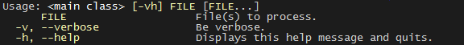

Every main method deserves picocli!
1. Introduction
Picocli is a one-file Java framework for parsing command line arguments and generating polished, easily tailored usage help messages. With colors.

A distinguishing feature of picocli is how it aims to let users run picocli-based applications without requiring picocli as an external dependency: all the source code lives in a single file, to encourage application authors to include it in source form.
How it works: annotate your class and picocli initializes it from the command line arguments, converting the input to strongly typed values in the fields of your class.
import picocli.CommandLine.Option;
import picocli.CommandLine.Parameters;
import java.io.File;
public class Example {
@Option(names = { "-v", "--verbose" }, description = "Be verbose.")
private boolean verbose = false;
@Parameters(arity = "1..*", paramLabel = "FILE", description = "File(s) to process.")
private File[] inputFiles;
...
}Then invoke CommandLine.parse with the command line parameters and an object you want to initialize.
String[] args = { "-v", "inputFile1", "inputFile2" };
Example app = CommandLine.parse(new Example(), args);
assert app.verbose;
assert app.inputFiles != null && app.inputFiles.length == 2;2. Options and Parameters
Command line arguments can be separated into options and positional parameters. Options have a name, positional parameters are the values that follow the options.

Picocli has separate annotations for options and positional parameters.
2.1. Options
An option must have one or more names.
Picocli lets you use any option name you want.
| You may be interested in this list of common option names. Following these conventions may make your application more intuitive to use for experienced users. |
The below example shows options with one or more names, options that take an option parameter, and a help option.
class Tar {
@Option(names = "-c", description = "create a new archive")
boolean extract;
@Option(names = { "-f", "--file" }, paramLabel = "ARCHIVE", description = "the archive file")
File archive;
@Parameters(paramLabel = "FILE", description = "one ore more files to archive")
File[] files;
@Option(names = { "-h", "--help" }, help = true, description = "display a help message")
private boolean helpRequested = false;
}Picocli matches the option names to set the field values.
String[] args = { "-c", "--file", "result.tar", "file1.txt", "file2.txt" };
Tar tar = CommandLine.parse(new Tar(), args);
assert !tar.helpRequested;
assert tar.create;
assert tar.archive.equals(new File("result.tar"));
assert Arrays.equals(tar.files, new File[] {new File("file1.txt"), new File("file2.txt")});2.2. Short Options
Picocli supports POSIX clustered short options: one or more single-character options without option-arguments, followed by at most one option with an option-argument, can be grouped behind one '-' delimiter.
For example, given this annotated class:
class ClusteredShortOptions {
@Option(names = "-a") boolean aaa;
@Option(names = "-b") boolean bbb;
@Option(names = "-c") boolean ccc;
@Option(names = "-f") String file;
}The following command line arguments are all equivalent and parsing them will give the same result:
<command> -abcfInputFile.txt
<command> -abcf=InputFile.txt
<command> -abc -f=InputFile.txt
<command> -ab -cf=InputFile.txt
<command> -a -b -c -fInputFile.txt
<command> -a -b -c -f InputFile.txt
<command> -a -b -c -f=InputFile.txt
...2.3. Positional Parameters
Positional parameters are the command line arguments following the options.
Use the (zero-based) index attribute to specify exactly which parameters to capture.
Omitting the index attribute means the field captures all positional parameters.
Array or collection fields can capture multiple values.
The index attribute accepts range values, so an annotation like @Parameters(index="2..4") captures the arguments at index 2, 3 and 4. Range values can be open-ended. For example, @Parameters(index="3..*") captures all arguments from index 3 and up.
For example:
class PositionalParameters {
@Parameters(hidden = true) // "hidden": don't show this parameter in usage help message
List<String> allParameters; // no "index" attribute: captures _all_ arguments (as Strings)
@Parameters(index = "0") InetAddress host;
@Parameters(index = "1") int port;
@Parameters(index = "2..*") File[] files;
}Picocli initializes fields with the values at the specified index in the arguments array.
String[] args = { "localhost", "12345", "file1.txt", "file2.txt" };
PositionalParameters params = CommandLine.parse(new PositionalParameters(), args);
assert params.host.getHostName().equals("localhost");
assert params.port == 12345;
assert Arrays.equals(params.files, new File[] {new File("file1.txt"), new File("file2.txt")});
assert params.allParameters.equals(Arrays.asList("localhost", "12345", "file1.txt", "file2.txt"));See Strongly Typed Everything for which types are supported out of the box and how to add custom types.
2.4. Double dash (--)
When one of the command line arguments is just two dashes without any characters attached (--), picocli interprets all following arguments as positional parameters, even arguments that match an option name.
class DoubleDashDemo {
@Option(names = "-v") boolean verbose;
@Option(names = "--files") List<String> files;
@Parameters List<String> params;
}The -- clarifies which of the arguments are positional parameters:
String[] args = { "-v", "--", "--files", "file1", "file2" };
DoubleDashDemo demo = CommandLine.parse(new DoubleDashDemo(), args);
assert demo.verbose;
assert demo.files == null;
assert demo.params.equals(Arrays.asList("--files", "file1", "file2"));3. Strongly Typed Everything
When command line options and positional parameters are mapped to the annotated fields, the text value is converted to the type of the annotated field.
3.1. Built-in Types
Out of the box, picocli can convert command line argument strings to:
-
any Java primitive type or their wrapper
-
any
enum -
BigDecimal,BigInteger -
Charset -
File -
InetAddress -
regex
Pattern -
String,StringBuilder,CharSequence -
java.sql.Time(for values in any of the"HH:mm","HH:mm:ss","HH:mm:ss.SSS", or"HH:mm:ss,SSS"formats) -
java.util.Date(for values in"yyyy-MM-dd"format) -
URL,URI -
UUID
3.2. Custom Type Converters
Register a custom type converter to handle data types other than the above built-in ones.
Custom converters need to implement the picocli.CommandLine.ITypeConverter interface:
public interface ITypeConverter<K> {
/**
* Converts the specified command line argument value to some domain object.
* @param value the command line argument String value
* @return the resulting domain object
* @throws Exception an exception detailing what went wrong during the conversion
*/
K convert(String value) throws Exception;
}Custom type converters can be registered with the CommandLine.registerConverter(Class<K> cls, ITypeConverter<K> converter)
method.
Picocli works with Java 5 and higher, so it does not have default converters for Java 8 types like Path or
Duration. Lambdas make it easy to register custom converters for these types:
|
commandLine.registerConverter(java.nio.file.Path.class, s -> java.nio.file.Paths.get(s));
commandLine.registerConverter(java.time.Duration.class, s -> java.time.Duration.parse(s));After registering custom converters, call the parse(String…) method on the CommandLine instance where the converters are registered. (The static parse method cannot be used.) For example:
class App {
@Parameters Path path;
@Option(names = "-d") Duration duration;
}App app = new App();
CommandLine commandLine = new CommandLine(app)
.registerConverter(Path.class, s -> Paths.get(s))
.registerConverter(Duration.class, s -> Duration.parse(s));
commandLine.parse("-d", "PT15M", "file1.txt");
assert app.path.equals(Paths.get("file1.txt"));
assert app.duration.equals(Duration.parse("PT15M"));3.3. Arrays and Collections
With array fields picocli uses reflection to discover the array element type, but with collections,
Java type erasure means picocli cannot find out the generic type of the collection.
For non-String collections, use the type attribute to specify what type to convert the command line arguments to.
|
Multiple parameters can be captured together in a single array or Collection field. When using a collection, use the type attribute to specify the collection element type. For example:
class Convert {
@Option(type = java.util.regex.Pattern.class, names = "-patterns");
List<Pattern> patterns;
@Parameters(type = File.class)
List<File> files;
}String[] args = { "-patterns", "a*b", "[a-e][i-u]", "--", "file1.txt", "file2.txt" };
Convert convert = CommandLine.parse(new Convert(), args);
// convert.patterns now has two Pattern objects
// convert.files now has two File objects| If a collection is returned from a type converter, the contents of the collection are added to the field, not the collection itself. |
4. Multiple Values
Arity is the number of parameters that will be consumed by an option.
4.1. Default Arity
The default arity value of an @Option or @Parameters field depends on its type.
-
Boolean fields: the default arity is 0 (consume zero parameters) the field is set to
truewhen the option name is recognized. (You can change this.) -
Single-valued types like
int,String,File: arity is 1 (consume one parameter). Omitting the option parameter results in a ParameterException: "Missing required parameter for field '<field-name>'". -
Multi-valued types like arrays or collections: consume from zero up to all available parameters (until encountering another option or subcommand).
4.2. Arity
When an option or parameters field has a type that can hold multiple values (an array or a collection),
the arity attribute lets you control exactly how many parameters to capture.
The arity attribute can specify an exact number of required parameters, or a range with a minimum and a maximum number of parameters.
The maximum can be an exact upper bound, or it can be "*" to denote any number of parameters. For example:
class ArityDemo {
@Parameters(arity = "3", descriptions = "exactly three Files")
File[] files;
@Option(names = "-f", arity = "2..4", description = "two to four floating point numbers")
double[] doubles;
@Option(names = "-s", arity = "1..*", description = "at least one string")
String[] strings;
}A MissingParameterException is thrown when fewer than the miminum number of parameters is specified on the command line.
Once the minimum number of parameters is consumed, picocli will check each subsequent command line argument to see whether it is an additional parameter, or a new option. For example:
ArityDemo -s A B C -f 1.0 2.0 3.0
Option -s has arity "1..*" but instead of consuming all parameters,
the last three parameters will be recognized as belonging to the -f option.
4.3. Split Regex
Options and parameters may also specify a split regular expression used to split each option parameter into smaller substrings. Each of these strings is converted to the type of the collection or array. See Arrays and Collections.
@Option(names = "-option", split = ",")
int[] values;Command line arguments like the following are interpreted as three int values instead of a single string:
-option 111,222,333
4.4. Multiple Occurrences
Users may also specify the same option multiple times. For example:
-option 111 -option 222 -option 333
Each value is appended to the array or collection.
5. Required Arguments
5.1. Required Options
Options can be marked required to make it mandatory for the user to specify them on the command line. When a required option is not specified, a MissingParameterException is thrown from the parse method. For example:
class MandatoryOption {
@Option(names = "-n", required = true, description = "mandatory number")
int number;
@Parameters
File[] files;
}The following command line arguments would result in an exception complaining that number is missing:
// invalid: missing option -n <command> file1 file2 file3
The following command line arguments would be accepted:
// valid: required option -n has a value <command> -n 123 file1 file2 file3
5.2. Required Parameters
Use the arity attribute to make @Parameters mandatory:
class BothOptionAndParametersMandatory {
@Parameters(arity = "1..*", descriptions = "at least one File")
File[] files;
@Option(names = "-n", required = true, description = "mandatory number")
int number;
}The following command line arguments would result in an exception complaining that files are missing:
// invalid: missing file parameters <command> -n 123
The following command line arguments would be accepted:
// valid: both required fields have a value <command> -n 123 file1
6. Help Options
Options with the attribute help = true are special: if one of the command line arguments is a "help" option, picocli will stop parsing the remaining arguments and will not check for required options.
@Option(names = {"-V", "--version"}, help = true, description = "display version info")
boolean versionRequested;
@Option(names = {"-h", "--help"}, help = true, description = "display this help message")
boolean helpRequested;This is suitable for options that should trigger the usage help message or application version information being shown on the console.
It is the responsibility of the application to check the field and show the usage help message:
App app = CommandLine.parse(new App(), args);
if (app.helpRequested) {
CommandLine.usage(new App(), System.err);
return;
}7. Usage Help
7.1. Compact Example
A default picocli usage help message looks like this:
Usage: cat [-AbeEnstTuv] [--help] [--version] [FILE...]
Concatenate FILE(s), or standard input, to standard output.
FILE Files whose contents to display
-A, --show-all equivalent to -vET
-b, --number-nonblank number nonempty output lines, overrides -n
-e equivalent to -vET
-E, --show-ends display $ at end of each line
-n, --number number all output lines
-s, --squeeze-blank suppress repeated empty output lines
-t equivalent to -vT
-T, --show-tabs display TAB characters as ^I
-u (ignored)
-v, --show-nonprinting use ^ and M- notation, except for LDF and TAB
--help display this help and exit
--version output version information and exit
Copyright(c) 2017
The usage help message is generated from annotation attributes, like below:
@Command(name = "cat", footer = "Copyright(c) 2017",
description = "Concatenate FILE(s), or standard input, to standard output.")
class Cat {
@Parameters(paramLabel = "FILE", description = "Files whose contents to display")
List<File> files;
@Option(names = "--help", help = true, description = "display this help and exit")
boolean help;
@Option(names = "-t", description = "equivalent to -vT") boolean t;
@Option(names = "-e", description = "equivalent to -vET") boolean e;
@Option(names = {"-A", "--show-all"}, description = "equivalent to -vET") boolean all;
// ...
}7.2. Command Name
In the above example, the program name is taken from the name attribute of the Command annotation:
@Command(name = "cat")Without a name attribute, picocli will show a generic <main class> in the synopsis:
Usage: <main class> [-AbeEnstTuv] [--help] [--version] [FILE...]
7.3. Parameter Labels
Non-boolean options require a value. The usage help should explain this, and picocli shows the option parameter
in the synopsis and in the option list. By default, the field name is shown in < and > fish brackets.
Use the paramLabel attribute to display a different name. For example:
Usage: <main class> [-f=FILE] [-n=<number>] NUM <host>
NUM number param
host the host parameter
-f= FILE a file
-n= <number> a number option
Some annotated fields in the below example class have a paramLabel attribute and others don’t:
@Command()
class ParamLabels {
@Option(names = "-f", paramLabel = "FILE", description = "a file") File f;
@Option(names = "-n", description = "a number option") int number;
@Parameters(index = "0", paramLabel = "NUM", description = "number param") int n;
@Parameters(index = "1", description = "the host parameter") InetAddress host;
}
For demonstration purposes the above example mixes the all-uppercase (e.g., NUM) style label and the fish bracket (e.g., <number>) style labels. For real applications, mixing these label styles should be avoided. An application should consistently use only one style.
|
7.4. Unsorted Option List
By default the options list displays options in alphabetical order. Use the sortOptions = false attribute to display options in the order they are declared in your class.
@Command(sortOptions = false)7.5. Abbreviated Synopsis
If a command is very complex and has many options, it is sometimes desirable to suppress details from the synopsis with the abbreviateSynopsis attribute. For example:
Usage: <main class> [OPTIONS] [<files>...]
Note that the positional parameters are not abbreviated.
@CommandLine.Command(abbreviateSynopsis = true)
class App {
@Parameters File[] files;
@Option(names = {"--count", "-c"}) int count;
....
}7.6. Custom Synopsis
For even more control of the synopsis, use the customSynopsis attribute to specify one ore more synopsis lines. For example:
Usage: ln [OPTION]... [-T] TARGET LINK_NAME (1st form) or: ln [OPTION]... TARGET (2nd form) or: ln [OPTION]... TARGET... DIRECTORY (3rd form) or: ln [OPTION]... -t DIRECTORY TARGET... (4th form)
To produce a synopsis like the above, specify the literal text in the customSynopsis attribute:
@Command(synopsisHeading = "", customSynopsis = {
"Usage: ln [OPTION]... [-T] TARGET LINK_NAME (1st form)",
" or: ln [OPTION]... TARGET (2nd form)",
" or: ln [OPTION]... TARGET... DIRECTORY (3rd form)",
" or: ln [OPTION]... -t DIRECTORY TARGET... (4th form)",
})
class Ln { ... }7.7. Header and Footer
The header will be shown at the top of the usage help message (before the synopsis). The first header line is also the line shown in the subcommand list if your command has subcommands (see Usage Help for Subcommands).
Use the footer attribute to specify one or more lines to show below the generated usage help message.
Each element of the attribute String array is displayed on a separate line.
The headerHeading and footerHeading may contain format specifiers. See Section Headings.
7.8. Section Headings
Section headers can be used to make usage message layout appear more spacious. Section headings may contain embedded line separator (%n) format specifiers:
@CommandLine.Command(name = "git-commit",
sortOptions = false,
headerHeading = "Usage:%n%n",
synopsisHeading = "%n",
descriptionHeading = "%nDescription:%n%n",
parameterListHeading = "%nParameters:%n",
optionListHeading = "%nOptions:%n",
header = "Record changes to the repository.",
description = "Stores the current contents of the index in a new commit " +
"along with a log message from the user describing the changes.")
class GitCommit { ... }The usage help message generated from this class is shown below in Expanded Example.
7.9. Expanded Example
The below example demonstrates what a customized usage message can look like. Note how section headings with line separators can create a more spacious usage message, and also that options are listed in declaration order (instead of in alphabetic order).
Usage:
Record changes to the repository.
git-commit [-ap] [--fixup=<commit>] [--squash=<commit>] [-c=<commit>]
[-C=<commit>] [-F=<file>] [-m[=<msg>...]] [<files>...]
Description:
Stores the current contents of the index in a new commit along with a log
message from the user describing the changes.
Parameters:
<files> the files to commit
Options:
-a, --all Tell the command to automatically stage files
that have been modified and deleted, but new
files you have not told Git about are not
affected.
-p, --patch Use the interactive patch selection interface to
chose which changes to commit
-C, --reuse-message=<commit>
Take an existing commit object, and reuse the log
message and the authorship information
(including the timestamp) when creating the
commit.
-c, --reedit-message=<commit>
Like -C, but with -c the editor is invoked, so
that the user canfurther edit the commit
message.
--fixup=<commit> Construct a commit message for use with rebase
--autosquash.
--squash=<commit> Construct a commit message for use with rebase
--autosquash. The commitmessage subject line is
taken from the specified commit with a prefix
of "squash! ". Can be used with additional
commit message options (-m/-c/-C/-F).
-F, --file=<file> Take the commit message from the given file. Use
- to read the message from the standard input.
-m, --message[=<msg>...] Use the given <msg> as the commit message. If
multiple -m options are given, their values are
concatenated as separate paragraphs.
The annotated class that this usage help message is generated from is shown in Section Headings.
7.10. Option-Parameter Separators
The separator displayed between options and option parameters (= by default)
in the synopsis and the option list can be configured with the separator attribute.
@Command(separator = " ")
the @Command(separator = " ") annotation also affects how picocli parses the command line. If you want the command parser to recognize one separator (= for example), but display a different separator (a space for example) in the usage help message, you need to programmatically configure the parser with the CommandLine.setSeparator method. See Custom Separators.
|
7.11. Hidden Options and Parameters
Options and Parameters with the hidden attribute set to true will not be shown in the usage help message.
This is useful for example when a parameter at some index is captured into multiple fields:
by default each of these fields would be shown in the usage message, which would be confusing for users.
For example, the all field below is annotated as hidden = true:
@Command()
class App {
@Parameters(index = "0", description = "destination host") InetAddress host;
@Parameters(index = "1", description = "destination port") int port;
@Parameters(index = "2..*", description = "files to transfer") String[] files;
@Parameters(hidden = true) String[] all;
}The above will generate the following usage help message, where the all field is not shown:
Usage: <main class> <host> <port> [<files>...]
host destination host
port destination port
files files to transfer
7.12. Show Default Values
Use the showDefaultValues = true attribute to append the default value of the options and positional parameters to the description column. Picocli uses reflection to get the default values from the annotated fields. For example:
@Command(showDefaultValues = true)
class DefaultValues {
@Option(names = {"-f", "--file"}, description = "the file to use")
File file = new File("config.xml");
}
CommandLine.usage(new DefaultValues(), System.out);This produces the following usage help:
Usage: <main class> -f=<file>
-f, --file=<file> the file to use
Default: config.xml
7.13. Required-Option Marker
Required options can be marked in the option list by the character specified with the requiredOptionMarker attribute. By default options are not marked because the synopsis shows users which options are required and which are optional. This feature may be useful in combination with abbreviatedSynopsis. For example:
@Command(requiredOptionMarker = '*', abbreviateSynopsis = true)
class Example {
@Option(names = {"-a", "--alpha"}, description = "optional alpha") String alpha;
@Option(names = {"-b", "--beta"}, required = true, description = "mandatory beta") String beta;
}Produces the following usage help message:
Usage: <main class> [OPTIONS] -a, --alpha=<alpha> optional alpha * -b, --beta=<beta> mandatory beta
8. ANSI Colors and Styles
8.1. Colorized Example
Below shows the same usage help message as shown in Expanded Example, with ANSI escape codes enabled.

8.2. Usage Help with Styles and Colors
You can use colors and styles in the descriptions, header and footer of the usage help message.
Picocli supports a custom notation for mixing colors and styles in text,
following a convention introduced by Jansi, where
@| starts a styled section, and |@ ends it.
Immediately following the @| is a comma-separated list of colors and styles, so @|STYLE1[,STYLE2]… text|@.
For example:
@Command(description = "Custom @|bold,underline styles|@ and @|fg(red) colors|@.")
| Pre-defined Styles | Pre-defined Colors |
|---|---|
bold |
black |
faint |
red |
underline |
green |
italic |
yellow |
blink |
blue |
reverse |
magenta |
reset |
cyan |
white |
Colors are applied as foreground colors by default.
You can set background colors by specifying bg(<color>).
For example, @|bg(red) text with red background|@.
Similarly, fg(<color>) explicitly sets the foreground color.
The example below shows how this can be used to add colors and styles to the headings and descriptions of a usage help message:
@CommandLine.Command(name = "git-commit",
sortOptions = false,
headerHeading = "@|bold,underline Usage|@:%n%n",
synopsisHeading = "%n",
descriptionHeading = "%n@|bold,underline Description|@:%n%n",
parameterListHeading = "%n@|bold,underline Parameters|@:%n",
optionListHeading = "%n@|bold,underline Options|@:%n",
header = "Record changes to the repository.",
description = "Stores the current contents of the index in a new commit " +
"along with a log message from the user describing the changes.")
class GitCommit { ... }
Styles cannot be nested, for example: @|bold this @|underline that|@|@ will not work. You can achieve the same by combining styles, for example: @|bold this|@ @|bold,underline that|@ will work fine.
|
8.3. More Colors
Most terminals support a 256 color indexed palette:
0x00-0x07: standard colors (the named colors) 0x08-0x0F: high intensity colors (often similar to named colors + bold style) 0x10-0xE7: 6 × 6 × 6 cube (216 colors): 16 + 36 × r + 6 × g + b (0 ≤ r, g, b ≤ 5) 0xE8-0xFF: grayscale from black to white in 24 steps
Colors from the 256 color palette can be specified by their index values or by their RGB components.
RGB components must be separated by a semicolon ; and each component must be between 0 and 5, inclusive.
For example, @|bg(0;5;0) text with red=0, green=5, blue=0 background|@,
or @|fg(46) the same color by index, as foreground color|@.

8.4. Configuring Fixed Elements
8.4.1. Color Scheme
Picocli uses a default color scheme for options, parameters and commands. There are no annotations to modify this color scheme, but it can be changed programmatically.
The below code snippet shows how a custom color scheme can be specified to configure the usage help message style:
// see also CommandLine.Help.defaultColorScheme()
ColorScheme colorScheme = new ColorScheme()
.commands (Style.bold, Style.underline) // combine multiple styles
.options (Style.fg_yellow) // yellow foreground color
.parameters (Style.fg_yellow)
.optionParams(Style.italic);
CommandLine.usage(annotatedObject, System.out, colorScheme);
...8.4.2. Color Scheme Overrides
The following system properties override the color scheme styles. This allows end users to adjust for their individual terminal color setup.
picocli.color.commands picocli.color.options picocli.color.parameters picocli.color.optionParams
For example:
java -Dpicocli.color.options=blink,blue -Dpicocli.color.parameters=reverse com.app.MainSystem property values may specify multiple comma separated styles.
8.5. Supported Platforms
Picocli will only emit ANSI escape codes on supported platforms.
8.5.1. Unix and Linux
Most Unix and Linux platforms support ANSI colors natively. On Windows, when picocli detects it is running under a Unix variant like Cygwin or MSYS(2) on Windows it will display ANSI colors and styles, otherwise it will not emit ANSI codes.
8.5.2. Windows
Starting from Windows 10 the Windows console supports ANSI escape sequences, but they may need to be enabled.
For Windows version below 10, the Windows command console doesn’t support output coloring by default. One option is to install either Cmder, ConEmu, ANSICON or Mintty (used by default in GitBash and Cygwin) to add coloring support to their Windows command console.
Another option is to use Jansi in your application. For example:
import org.fusesource.jansi.AnsiConsole;
...
public static void main(String[] args) {
AnsiConsole.systemInstall(); // Jansi magic
CommandLine.run(new WindowsJansiDemo(), System.err, Ansi.ON, args);
AnsiConsole.systemUninstall();
}| None of the above is mandatory. If not supported, picocli will simply not emit ANSI escape codes, and everything will work without colors. |
8.6. Forcing ANSI On/Off
You can force picocli to either always use ANSI codes or never use ANSI codes regardless of the platform:
-
Setting system property
picocli.ansitotrueforces picocli to use ANSI codes; settingpicocli.ansitofalseforces picocli to not use ANSI codes. This may be a useful facility for users of your command line application. -
You can decide to force disable or force enable ANSI escape codes programmatically by specifying
Ansi.ONorAnsi.OFFwhen invokingCommandLine.usage. This overrides the value of system propertypicocli.ansi. For example:
import picocli.CommandLine.Help.Ansi;
App app = CommandLine.usage(new App(), System.out, Ansi.OFF, args);9. Usage Help API
For further customization of the usage help message, picocli has a Help API.
The Help class provides a number of high-level operations, and a set of components like Layout, TextTable, IOptionRenderer, etc., that can be used to build custom help messages.
Details of the Help API are out of scope for this document, but the following sections give some idea of what is possible.
9.1. Reordering Sections
One thing you may want to do is reorder sections of the usage message or add custom sections.
To reorder sections, you need to use the CommandLine.Help class directly. The CommandLine.usage method implementation looks like this:
Help help = new Help(annotatedObject);
StringBuilder sb = new StringBuilder()
.append(help.headerHeading())
.append(help.header())
.append(help.synopsisHeading()) //e.g. Usage:
.append(help.synopsis()) //e.g. <main> [OPTIONS] [ARGUMENTS]
.append(help.descriptionHeading()) //e.g. %nDescription:%n%n
.append(help.description()) //e.g. "application description"
.append(help.parameterListHeading()) //e.g. %nPositional parameters:%n%n
.append(help.parameterList()) //e.g. [FILE...] the files to convert
.append(help.optionListHeading()) //e.g. %nOptions:%n%n
.append(help.optionList()) //e.g. -h, --help displays this help
.append(help.commandListHeading()) //e.g. %nCommands:%n%n
.append(help.commandList()) //e.g. add adds a to b
.append(help.footerHeading())
.append(help.footer());In your application, instead of calling CommandLine.usage(new MainClass(), System.err), you can alter the above code to, for example, list subcommands first, then global options and finally the parameters.
9.2. Custom Layout
Picocli also supports unconventional option list layouts. An example of an unconventional layout is the zip application, which shows multiple options per row:
CommandLine.usage(new ZipHelpDemo(), System.out);Copyright (c) 1990-2008 Info-ZIP - Type 'zip "-L"' for software license. Zip 3.0 (July 5th 2008). Command: zip [-options] [-b path] [-t mmddyyyy] [-n suffixes] [zipfile list] [-xi list] The default action is to add or replace zipfile entries from list, which can include the special name - to compress standard input. If zipfile and list are omitted, zip compresses stdin to stdout. -f freshen: only changed files -u update: only changed or new files -d delete entries in zipfile -m move into zipfile (delete OS files) -r recurse into directories -j junk (don't record) directory names -0 store only -l convert LF to CR LF (-ll CR LF to LF) -1 compress faster -9 compress better -q quiet operation -v verbose operation/print version info -c add one-line comments -z add zipfile comment -@ read names from stdin -o make zipfile as old as latest entry -x exclude the following names -i include only the following names -F fix zipfile (-FF try harder) -D do not add directory entries -A adjust self-extracting exe -J junk zipfile prefix (unzipsfx) -T test zipfile integrity -X eXclude eXtra file attributes -y store symbolic links as the link instead of the referenced file -e encrypt -n don't compress these suffixes -h2 show more help
This can be achieved in picocli by subclassing the Help.Layout class. See the picocli tests for how to achieve this.
10. Subcommands
10.1. Registering Subcommands
Subcommands can be registered with the CommandLine.addCommand method. You pass in the name of the command (used by the parser to recognize subcommands in the command line arguments) and the annotated object to populate with the subcommand options.
CommandLine commandLine = new CommandLine(new Git())
.addCommand("status", new GitStatus())
.addCommand("commit", new GitCommit();
.addCommand("add", new GitAdd())
.addCommand("branch", new GitBranch())
.addCommand("checkout", new GitCheckout())
.addCommand("clone", new GitClone())
.addCommand("diff", new GitDiff())
.addCommand("merge", new GitMerge())
.addCommand("push", new GitPush())
.addCommand("rebase", new GitRebase())
.addCommand("tag", new GitTag());10.2. Parsing Subcommands
The CommandLine.parse method returns a List with the recognized commands. The main command (git in this example) is always the first element in the returned list.
CommandLine commandLine = new CommandLine(new Git());
commandLine.addCommand("status", new GitStatus());
...
String[] args = { "--git-dir=/home/rpopma/picocli", "status", "-sbuno"};
List<Object> parsed = commandLine.parse(args);
assert parsed.size() == 2 : "1 command and 1 subcommand found"
assert parsed.get(0).getClass() == Git.class : "main command"
assert parsed.get(1).getClass() == GitStatus.class : "subcommand"Your application needs to inspect this list to see what subcommand was invoked and take appropriate action. For example:
Git git = (Git) parsed.get(0);
assert git.gitDir.equals(new File("/home/rpopma/picocli"));
GitStatus gitstatus = (GitStatus) parsed.get(1);
assert gitstatus.shortFormat : "git status -s"
assert gitstatus.branchInfo : "git status -b"
assert !gitstatus.showIgnored : "git status --showIgnored not specified"
assert gitstatus.mode == GitStatusMode.no : "git status -u=no"10.3. Usage Help for Subcommands
After registering subcommands, calling the commandLine.usage method will show a usage help message that includes all registered commands. For example:
CommandLine commandLine = new CommandLine(new Git());
commandLine.addCommand("status", new GitStatus());
...
commandLine.usage(System.out);The usage help message shows the commands in the order they were registered:
Usage: git [-hV] [--git-dir=<gitDir>]
Git is a fast, scalable, distributed revision control system with an unusually
rich command set that provides both high-level operations and full access to
internals.
-V, --version Prints version information and exits
-h, --help Prints this help message and exits
--git-dir=<gitDir> Set the path to the repository
Commands:
The most commonly used git commands are:
status Show the working tree status.
commit Record changes to the repository.
add Add file contents to the index.
branch List, create, or delete branches.
checkout Checkout a branch or paths to the working tree.
clone Clone a repository into a new directory.
diff Show changes between commits, commit and working tree, etc.
merge Join two or more development histories together.
push Update remote refs along with associated objects.
rebase Forward-port local commits to the updated upstream head.
tag Create, list, delete or verify a tag object signed with GPG.
The above usage help message is produced from the annotations on the class below:
@Command(name = "git", sortOptions = false,
description = "Git is a fast, scalable, distributed revision control " +
"system with an unusually rich command set that provides both " +
"high-level operations and full access to internals.",
commandListHeading = "%nCommands:%n%nThe most commonly used git commands are:%n")
class Git {
@Option(names = {"-V", "--version"}, help = true,
description = "Prints version information and exits")
private boolean versionRequested;
@Option(names = {"-h", "--help"}, help = true,
description = "Prints this help message and exits")
private boolean helpRequested;
@Option(names = "--git-dir", description = "Set the path to the repository")
private File gitDir;
}The usage help message for each subcommand is produced by calling CommandLine.usage(new SubCommand(), out).
For example, see Section Headings for an example subcommand (git-commit), which produces the help message shown
in Expanded Example.
11. Tips & Tricks
11.1. Less Boilerplate
You can omit some of the boilerplate code from your application when the annotated object implements Runnable:
Runnable runnable = null;
try {
runnable = CommandLine.parse(annotatedObject, args);
} catch (Exception ex) {
System.err.println(ex.getMessage());
CommandLine.usage(annotatedObject, System.err);
return;
}
runnable.run();CommandLine.run(new MyApp(), System.err, args);Note that the CommandLine.run convenience method cannot be used with subcommands.
11.2. Boolean Parameters
It is possible to let end users explicitly specify "true" or "false" as a parameter for a boolean option by defining an explicit Arity attribute. A boolean option with arity = "0..1" accepts zero to one parameters, arity = "1" means the option must have one parameter. For example:
class BooleanOptionWithParameters {
@Option(names = "-x", arity = "1", description = "1 mandatory parameter")
boolean x;
@Option(names = "-y", arity = "0..1", description = "min 0 and max 1 parameter")
boolean y;
}The following ways to invoke the program will be accepted (values are not case sensitive):
<command> -x true <command> -x FALSE <command> -x TRUE -y <command> -x True -y False
But trying to specify the -x option without a parameter, or with a value other than "true" or "false" (case insensitive) will result in a ParameterException.
11.3. Hexadecimal Values
Numeric values are interpreted as decimal numbers by default. If you want picocli to be more flexible, you can register a custom type converter that delegates to the decode method to convert strings to numbers.
The decode method looks at the prefix to determine the radix, so numbers
starting with 0x, 0X or # are interpreted as hexadecimal numbers, numbers starting with 0 are interpreted
as octal numbers, and otherwise the number is interpreted as a decimal number.
|
Java 8-style lambdas:
new CommandLine(obj)
.registerConverter(Byte.class, s -> Byte::decode)
.registerConverter(Byte.TYPE, s -> Byte::decode)
.registerConverter(Short.class, s -> Short::decode)
.registerConverter(Short.TYPE, s -> Short::decode)
.registerConverter(Integer.class, s -> Integer::decode)
.registerConverter(Integer.TYPE, s -> Integer::decode)
.registerConverter(Long.class, s -> Long::decode)
.registerConverter(Long.TYPE, s -> Long::decode);In Java 5:
ITypeConverter<Integer> intConverter = new ITypeConverter<Integer>() {
public Integer convert(String s) {
return Integer.decode(s);
}
};
commandLine.registerConverter(Integer.class, intConverter);
commandLine.registerConverter(Integer.TYPE, intConverter);
...11.4. Option-Parameter Separators
11.4.1. Default Separators
Options may take an option parameter (also called option-argument).
For POSIX-style short options (like -f or -c), the option parameter may be attached to the option,
or it may be separated by a space or the separator string (= by default).
That is, all of the below are equivalent:
<command> -foutput.txt
<command> -f output.txt
<command> -f=output.txtLong option names (like --file) must be separated from their option parameter by a space or the
separator string (= by default). That is, the first two below examples are valid but the last example is invalid:
// valid (separator between --file and its parameter)
<command> --file output.txt
<command> --file=output.txt
// invalid (picocli will not recognize the --file option when attached to its parameter)
<command> --fileoutput.txt11.4.2. Custom Separators
The separator string can be customized programmatically or declaratively.
Use the separator attribute of the @Command annotation to declaratively set a separator string:
@Command(separator = ":") // declaratively set a separator
class OptionArg {
@Option(names = { "-f", "--file" }) String file;
}OptionArg optionArg = CommandLine.parse(new OptionArg(), "-f:output.txt");
assert optionArg.file.equals("output.txt");Alternatively, the separator string can be changed programmatically with the CommandLine.setSeparator(String separator) method.
For example:
OptionArg optionArg = new OptionArg();
CommandLine commandLine = new CommandLine(optionArg);
commandLine.setSeparator(":"); // programmatically set a separator
commandLine.parse("-f:output.txt");
assert optionArg.file.equals("output.txt");11.5. Subclassing for Reuse
Picocli will walk the class hierarchy to check for annotations, so you can declare common @Options and @Command attributes on a superclass and override these fields or attributes on a subclass.
The below example shows how common options like help and version can be declared as fields in a superclass so they are available in all subclasses. Similarly, annotating the superclass with default @Command attributes means subclasses won’t need to set these attributes.
@Command(synopsisHeading = "%nUsage:%n%n",
descriptionHeading = "%nDescription:%n%n",
parameterListHeading = "%nParameters:%n%n",
optionListHeading = "%nOptions:%n%n",
commandListHeading = "%nCommands:%n%n")
public abstract class AbstractCommand {
@Option(names = { "-h", "-?", "--help" }, help = true,
description = "give this help list")
protected boolean helpRequested;
@Option(names = { "-V", "--version" }, help = true,
description = "print program version")
protected boolean versionRequested;
}All commands that extend AbstractCommand support the --help and --version options, and generate a usage help message in the same spacious style. For example:
@Command(name = "zip",
header = "Compresses the specified FILE(s).",
description = "The default action is to add or replace zipfile entries from list, " +
"which can include the special name - to compress standard input.",
footer = "Copyright (c) 1990-2008 Info-ZIP - Type 'zip "-L"' for software license.")
public class ZipCommand extends AbstractCommand {
@Option(names = { "-o", "--output" }, description = "output file to write to")
private File output;
@Parameter(paramLabel = "FILE", description = "FILEs to compress")
private File[] files;
}11.6. Best Practices for Command Line Interfaces
When designing your command line application, the GNU recommendations for command line interfaces and POSIX Utility Guidelines may be useful.
Generally, many applications use options for optional values and parameters for mandatory values. However, picocli lets you make options required if you want to, see Required Arguments.
12. API Javadoc
Picocli API Javadoc can be found here.
13. GitHub Project
The GitHub project has the source code, tests, build scripts, etc.
(Star this project on GitHub if you like it!)
14. Issue Tracker
Please use the Issue Tracker to report bugs or request features.
15. License
Picocli is licensed under the Apache License 2.0.
16. Releases
Previous versions are available from the GitHub project Releases.
17. Download
Here is the source. Copy and paste it into a file called CommandLine.java, add it to your project, and enjoy!
|
/*
Copyright 2017 Remko Popma
Licensed under the Apache License, Version 2.0 (the "License");
you may not use this file except in compliance with the License.
You may obtain a copy of the License at
http://www.apache.org/licenses/LICENSE-2.0
Unless required by applicable law or agreed to in writing, software
distributed under the License is distributed on an "AS IS" BASIS,
WITHOUT WARRANTIES OR CONDITIONS OF ANY KIND, either express or implied.
See the License for the specific language governing permissions and
limitations under the License.
*/
package picocli;
import java.awt.Point;
import java.io.File;
import java.io.PrintStream;
import java.lang.annotation.ElementType;
import java.lang.annotation.Retention;
import java.lang.annotation.RetentionPolicy;
import java.lang.annotation.Target;
import java.lang.reflect.Array;
import java.lang.reflect.Field;
import java.math.BigDecimal;
import java.math.BigInteger;
import java.net.InetAddress;
import java.net.MalformedURLException;
import java.net.URI;
import java.net.URISyntaxException;
import java.net.URL;
import java.nio.charset.Charset;
import java.sql.Time;
import java.text.BreakIterator;
import java.text.ParseException;
import java.text.SimpleDateFormat;
import java.util.ArrayList;
import java.util.Arrays;
import java.util.Collection;
import java.util.Collections;
import java.util.Comparator;
import java.util.Date;
import java.util.HashMap;
import java.util.HashSet;
import java.util.LinkedHashMap;
import java.util.LinkedList;
import java.util.List;
import java.util.Map;
import java.util.Queue;
import java.util.Set;
import java.util.SortedMap;
import java.util.SortedSet;
import java.util.Stack;
import java.util.TreeMap;
import java.util.TreeSet;
import java.util.UUID;
import java.util.regex.Pattern;
import picocli.CommandLine.Help.Ansi.Text;
import static java.util.Locale.ENGLISH;
import static picocli.CommandLine.Help.Ansi.*;
import static picocli.CommandLine.Help.Column.Overflow.*;
/**
* <p>
* CommandLine interpreter that uses reflection to initialize an annotated domain object with values obtained from the
* command line arguments.
* </p><h2>Example</h2>
* <pre>import static picocli.CommandLine.*;
*
* @Command(header = "Encrypt FILE(s), or standard input, to standard output or to the output file.")
* public class Encrypt {
*
* @Parameters(type = File.class, description = "Any number of input files")
* private List<File> files = new ArrayList<File>();
*
* @Option(names = { "-o", "--out" }, description = "Output file (default: print to console)")
* private File outputFile;
*
* @Option(names = { "-v", "--verbose"}, description = "Verbosely list files processed")
* private boolean verbose;
*
* @Option(names = { "-h", "--help", "-?", "-help"}, help = true, description = "Display this help and exit")
* private boolean help;
* }
* </pre>
* <p>
* Use {@code CommandLine} to initialize a domain object as follows:
* </p><pre>
* public static void main(String... args) {
* try {
* Encrypt encrypt = CommandLine.parse(new Encrypt(), args);
* if (encrypt.help) {
* CommandLine.usage(encrypt, System.out);
* } else {
* runProgram(encrypt);
* }
* } catch (ParameterException ex) { // command line arguments could not be parsed
* System.err.println(ex.getMessage());
* CommandLine.usage(new Encrypt(), System.err);
* }
* }
* </pre><p>
* Invoke the above program with some command line arguments. The below are all equivalent:
* </p>
* <pre>
* --verbose --out=outfile in1 in2
* --verbose --out outfile in1 in2
* -v --out=outfile in1 in2
* -v -o outfile in1 in2
* -v -o=outfile in1 in2
* -vo outfile in1 in2
* -vo=outfile in1 in2
* -v -ooutfile in1 in2
* -vooutfile in1 in2
* </pre>
*/
public class CommandLine {
/** This is picocli version {@value}. */
public static final String VERSION = "0.9.6";
private final Interpreter interpreter;
private final List<Object> parsedCommands = new ArrayList<Object>();
private final Map<String, Object> commandMap = new LinkedHashMap<String, Object>();
/**
* Constructs a new {@code CommandLine} interpreter with the specified annotated object.
* When the {@link #parse(String...)} method is called, fields of the specified object that are annotated
* with {@code @Option} or {@code @Parameters} will be initialized based on command line arguments.
* @param annotatedObject the object to initialize from the command line arguments
*/
public CommandLine(Object annotatedObject) {
interpreter = new Interpreter(annotatedObject);
}
/** Registers a sub-command with the specified name.
* @param name the string to recognize on the command line as a sub-command
* @param annotatedObject the object to initialize with command line arguments following the sub-command name
* @return this CommandLine object, to allow method chaining
*/
public CommandLine addCommand(String name, Object annotatedObject) {
interpreter.commands.put(name, new Interpreter(annotatedObject));
commandMap.put(name, annotatedObject);
return this;
}
/** Returns a map with the {@linkplain #addCommand(String, Object) registered} sub-commands.
* @return a map with the registered sub-commands */
public Map<String, Object> getCommands() {
return new LinkedHashMap<String, Object>(commandMap);
}
/**
* <p>
* Convenience method that initializes the specified annotated object from the specified command line arguments.
* </p><p>
* This is equivalent to
* </p><pre>
* CommandLine cli = new CommandLine(annotatedObject);
* cli.parse(args);
* return annotatedObject;
* </pre>
*
* @param annotatedObject the object to initialize. This object contains fields annotated with
* {@code @Option} or {@code @Parameters}.
* @param args the command line arguments to parse
* @param <T> the type of the annotated object
* @return the specified annotated object
* @throws ParameterException if the specified command line arguments are invalid
*/
public static <T> T parse(T annotatedObject, String... args) {
CommandLine cli = new CommandLine(annotatedObject);
cli.parse(args);
return annotatedObject;
}
/**
* <p>
* Initializes the annotated object that this {@code CommandLine} was constructed with as well as possibly any
* registered commands, based on the specified command line arguments,
* and returns a list of all commands that were initialized by this method.
* </p>
*
* @param args the command line arguments to parse
* @return a list with all annotated objects initialized by this method
* @throws ParameterException if the specified command line arguments are invalid
*/
public List<Object> parse(String... args) {
interpreter.parse(args);
return new ArrayList<Object>(parsedCommands);
}
/**
* Equivalent to {@code new CommandLine(annotatedObject).usage(out)}. See {@link #usage(PrintStream)} for details.
* @param annotatedObject the object annotated with {@link Command}, {@link Option} and {@link Parameters}
* @param out the print stream to print the help message to
*/
public static void usage(Object annotatedObject, PrintStream out) {
new CommandLine(annotatedObject).usage(out);
}
/**
* Equivalent to {@code new CommandLine(annotatedObject).usage(out, ansi)}.
* See {@link #usage(PrintStream, Help.Ansi)} for details.
* @param annotatedObject the object annotated with {@link Command}, {@link Option} and {@link Parameters}
* @param out the print stream to print the help message to
* @param ansi whether the usage message should contain ANSI escape codes or not
*/
public static void usage(Object annotatedObject, PrintStream out, Help.Ansi ansi) {
new CommandLine(annotatedObject).usage(out, ansi);
}
/**
* Equivalent to {@code new CommandLine(annotatedObject).usage(out, colorScheme)}.
* See {@link #usage(PrintStream, Help.ColorScheme)} for details.
* @param annotatedObject the object annotated with {@link Command}, {@link Option} and {@link Parameters}
* @param out the print stream to print the help message to
* @param colorScheme the {@code ColorScheme} defining the styles for options, parameters and commands when ANSI is enabled
*/
public static void usage(Object annotatedObject, PrintStream out, Help.ColorScheme colorScheme) {
new CommandLine(annotatedObject).usage(out, colorScheme);
}
/**
* Delegates to {@link #usage(PrintStream, Help.Ansi)} with the {@linkplain Help.Ansi#AUTO platform default}.
* @param out the printStream to print to
* @see #usage(PrintStream, Help.ColorScheme)
*/
public void usage(PrintStream out) {
usage(out, Help.Ansi.AUTO);
}
/**
* Delegates to {@link #usage(PrintStream, Help.ColorScheme)} with the {@linkplain Help#defaultColorScheme(CommandLine.Help.Ansi) default color scheme}.
* @param out the printStream to print to
* @param ansi whether the usage message should include ANSI escape codes or not
* @see #usage(PrintStream, Help.ColorScheme)
*/
public void usage(PrintStream out, Help.Ansi ansi) {
usage(out, Help.defaultColorScheme(ansi));
}
/**
* Prints a usage help message for the specified annotated class to the specified {@code PrintStream}.
* Delegates construction of the usage help message to the {@link Help} inner class and is equivalent to:
* <pre>
* Help help = new Help(annotatedObject).addAllCommands(getCommands());
* StringBuilder sb = new StringBuilder()
* .append(help.headerHeading())
* .append(help.header())
* .append(help.synopsisHeading()) //e.g. Usage:
* .append(help.synopsis()) //e.g. <main class> [OPTIONS] <command> [COMMAND-OPTIONS] [ARGUMENTS]
* .append(help.descriptionHeading()) //e.g. %nDescription:%n%n
* .append(help.description()) //e.g. {"Converts foos to bars.", "Use options to control conversion mode."}
* .append(help.parameterListHeading()) //e.g. %nPositional parameters:%n%n
* .append(help.parameterList()) //e.g. [FILE...] the files to convert
* .append(help.optionListHeading()) //e.g. %nOptions:%n%n
* .append(help.optionList()) //e.g. -h, --help displays this help and exits
* .append(help.commandListHeading()) //e.g. %nCommands:%n%n
* .append(help.commandList()) //e.g. add adds the frup to the frooble
* .append(help.footerHeading())
* .append(help.footer());
* out.print(sb);
* </pre>
* <p>Annotate your class with {@link Command} to control many aspects of the usage help message, including
* the program name, text of section headings and section contents, and some aspects of the auto-generated sections
* of the usage help message.
* <p>To customize the auto-generated sections of the usage help message, like how option details are displayed,
* instantiate a {@link Help} object and use a {@link Help.TextTable} with more of fewer columns, a custom
* {@linkplain Help.Layout layout}, and/or a custom option {@linkplain Help.IOptionRenderer renderer}
* for ultimate control over which aspects of an Option or Field are displayed where.</p>
* @param out the {@code PrintStream} to print the usage help message to
* @param colorScheme the {@code ColorScheme} defining the styles for options, parameters and commands when ANSI is enabled
*/
public void usage(PrintStream out, Help.ColorScheme colorScheme) {
Help help = new Help(interpreter.annotatedObject, colorScheme).addAllCommands(commandMap);
StringBuilder sb = new StringBuilder()
.append(help.headerHeading())
.append(help.header())
.append(help.synopsisHeading()) //e.g. Usage:
.append(help.synopsis()) //e.g. <main class> [OPTIONS] <command> [COMMAND-OPTIONS] [ARGUMENTS]
.append(help.descriptionHeading()) //e.g. %nDescription:%n%n
.append(help.description()) //e.g. {"Converts foos to bars.", "Use options to control conversion mode."}
.append(help.parameterListHeading()) //e.g. %nPositional parameters:%n%n
.append(help.parameterList()) //e.g. [FILE...] the files to convert
.append(help.optionListHeading()) //e.g. %nOptions:%n%n
.append(help.optionList()) //e.g. -h, --help displays this help and exits
.append(help.commandListHeading()) //e.g. %nCommands:%n%n
.append(help.commandList()) //e.g. add adds the frup to the frooble
.append(help.footerHeading())
.append(help.footer());
out.print(sb);
}
/**
* Delegates to {@link #run(Runnable, PrintStream, Help.Ansi, String...)} with {@link Help.Ansi#AUTO}.
* @param annotatedObject the command to run when {@linkplain #parse(Object, String...) parsing} succeeds.
* @param out the printStream to print to
* @param args the command line arguments to parse
* @param <R> the annotated object must implement Runnable
* @see #run(Runnable, PrintStream, Help.Ansi, String...)
*/
public static <R extends Runnable> void run(R annotatedObject, PrintStream out, String... args) {
run(annotatedObject, out, AUTO, args);
}
/**
* Convenience method to allow command line application authors to avoid some boilerplate code in their application.
* The annotated object needs to implement {@link Runnable}. Calling this method is equivalent to:
* <pre>
* Runnable runnable = null;
* try {
* runnable = parse(annotatedObject, args);
* } catch (Exception ex) {
* System.err.println(ex.getMessage());
* usage(annotatedObject, out, ansi);
* return;
* }
* runnable.run();
* </pre>
* Note that this method is not suitable for commands with subcommands.
* @param annotatedObject the command to run when {@linkplain #parse(Object, String...) parsing} succeeds.
* @param out the printStream to print to
* @param ansi whether the usage message should include ANSI escape codes or not
* @param args the command line arguments to parse
* @param <R> the annotated object must implement Runnable
*/
public static <R extends Runnable> void run(R annotatedObject, PrintStream out, Help.Ansi ansi, String... args) {
Runnable runnable = null;
try {
runnable = parse(annotatedObject, args);
} catch (Exception ex) {
out.println(ex.getMessage());
usage(annotatedObject, out, ansi);
return;
}
runnable.run();
}
/**
* Registers the specified type converter for the specified class. When initializing fields annotated with
* {@link Option}, the field's type is used as a lookup key to find the associated type converter, and this
* type converter converts the original command line argument string value to the correct type.
* <p>
* Java 8 lambdas make it easy to register custom type converters:
* </p>
* <pre>
* commandLine.registerConverter(java.nio.file.Path.class, s -> java.nio.file.Paths.get(s));
* commandLine.registerConverter(java.time.Duration.class, s -> java.time.Duration.parse(s));</pre>
* <p>
* Built-in type converters are pre-registered for the following java 1.5 types:
* </p>
* <ul>
* <li>all primitive types</li>
* <li>all primitive wrapper types: Boolean, Byte, Character, Double, Float, Integer, Long, Short</li>
* <li>any enum</li>
* <li>java.io.File</li>
* <li>java.math.BigDecimal</li>
* <li>java.math.BigInteger</li>
* <li>java.net.InetAddress</li>
* <li>java.net.URI</li>
* <li>java.net.URL</li>
* <li>java.nio.charset.Charset</li>
* <li>java.sql.Time</li>
* <li>java.util.Date</li>
* <li>java.util.UUID</li>
* <li>java.util.regex.Pattern</li>
* <li>StringBuilder</li>
* <li>CharSequence</li>
* <li>String</li>
* </ul>
*
* @param cls the target class to convert parameter string values to
* @param converter the class capable of converting string values to the specified target type
* @param <K> the target type
* @return this CommandLine object, to allow method chaining
*/
public <K> CommandLine registerConverter(Class<K> cls, ITypeConverter<K> converter) {
interpreter.converterRegistry.put(Assert.notNull(cls, "class"), Assert.notNull(converter, "converter"));
return this;
}
/** Returns the String that separates option names from option values when parsing command line options. {@code '='} by default.
* @return the String the parser uses to separate option names from option values */
public String getSeparator() {
return interpreter.separator;
}
/** Sets the String the parser uses to separate option names from option values to the specified value.
* @param separator the String that separates option names from option values */
public void setSeparator(String separator) {
interpreter.separator = Assert.notNull(separator, "separator");
}
private static boolean empty(String str) { return str == null || str.trim().length() == 0; }
private static boolean empty(Object[] array) { return array == null || array.length == 0; }
private static boolean empty(Text txt) { return txt == null || txt.plain.toString().trim().length() == 0; }
private static String str(String[] arr, int i) { return (arr == null || arr.length == 0) ? "" : arr[i]; }
private static boolean isBoolean(Class<?> type) { return type == Boolean.class || type == Boolean.TYPE; }
/**
* <p>
* Annotate fields in your class with {@code @Option} and picocli will initialize these fields when matching
* arguments are specified on the command line.
* </p><p>
* For example:
* </p>
* <pre>import static picocli.CommandLine.*;
*
* public class MyClass {
* @Parameters(type = File.class, description = "Any number of input files")
* private List<File> files = new ArrayList<File>();
*
* @Option(names = { "-o", "--out" }, description = "Output file (default: print to console)")
* private File outputFile;
*
* @Option(names = { "-v", "--verbose"}, description = "Verbosely list files processed")
* private boolean verbose;
*
* @Option(names = { "-h", "--help", "-?", "-help"}, help = true, description = "Display this help and exit")
* private boolean help;
*
* @Option(names = { "-V", "--version"}, help = true, description = "Display version information and exit")
* private boolean version;
* }
* </pre>
* <p>
* A field cannot be annotated with both {@code @Parameters} and {@code @Option} or a
* {@code ParameterException} is thrown.
* </p>
*/
@Retention(RetentionPolicy.RUNTIME)
@Target(ElementType.FIELD)
public @interface Option {
/**
* One or more option names. At least one option name is required.
* <p>
* Different environments have different conventions for naming options, but usually options have a prefix
* that sets them apart from parameters.
* Picocli supports all of the below styles. The default separator is {@code '='}, but this can be configured.
* </p><p>
* <b>*nix</b>
* </p><p>
* In Unix and Linux, options have a short (single-character) name, a long name or both.
* Short options
* (<a href="http://pubs.opengroup.org/onlinepubs/9699919799/basedefs/V1_chap12.html#tag_12_02">POSIX
* style</a> are single-character and are preceded by the {@code '-'} character, e.g., {@code `-v'}.
* <a href="https://www.gnu.org/software/tar/manual/html_node/Long-Options.html">GNU-style</a> long
* (or <em>mnemonic</em>) options start with two dashes in a row, e.g., {@code `--file'}.
* </p><p>Picocli supports the POSIX convention that short options can be grouped, with the last option
* optionally taking a parameter, which may be attached to the option name or separated by a space or
* a {@code '='} character. The below examples are all equivalent:
* </p><pre>
* -xvfFILE
* -xvf FILE
* -xvf=FILE
* -xv --file FILE
* -xv --file=FILE
* -x -v --file FILE
* -x -v --file=FILE
* </pre><p>
* <b>DOS</b>
* </p><p>
* DOS options mostly have upper case single-character names and start with a single slash {@code '/'} character.
* Option parameters are separated by a {@code ':'} character. Options cannot be grouped together but
* must be specified separately. For example:
* </p><pre>
* DIR /S /A:D /T:C
* </pre><p>
* <b>PowerShell</b>
* </p><p>
* Windows PowerShell options generally are a word preceded by a single {@code '-'} character, e.g., {@code `-Help'}.
* Option parameters are separated by a space or by a {@code ':'} character.
* </p>
* @return one or more option names
*/
String[] names();
/**
* Indicates whether this option is required. By default this is false.
* If an option is required, but a user invokes the program without specifying the required option,
* a {@link MissingParameterException} is thrown from the {@link #parse(String...)} method.
* @return whether this option is required
*/
boolean required() default false;
/**
* Set {@code help=true} if this option should disable validation of the remaining arguments:
* If the {@code help} option is specified, no error message is generated for missing required options.
* <p>
* This attribute is useful for special options like help ({@code -h} and {@code --help} on unix,
* {@code -?} and {@code -Help} on Windows) or version ({@code -V} and {@code --version} on unix,
* {@code -Version} on Windows).
* </p>
* <p>
* Note that the {@link #parse(String...)} method will not print help documentation. It will only set
* the value of the annotated field. It is the responsibility of the caller to inspect the annotated fields
* and take the appropriate action.
* </p>
* @return whether this option disables validation of the other arguments
*/
boolean help() default false;
/**
* Description of this option, used when generating the usage documentation.
* @return the description of this option
*/
String[] description() default {};
/**
* Specifies the minimum number of required parameters and the maximum number of accepted parameters.
* If an option declares a positive arity, and the user specifies an insufficient number of parameters on the
* command line, a {@link MissingParameterException} is thrown by the {@link #parse(String...)} method.
* <p>
* In many cases picocli can deduce the number of required parameters from the field's type.
* By default, flags (boolean options) have arity zero,
* and single-valued type fields (String, int, Integer, double, Double, File, Date, etc) have arity one.
* Generally, fields with types that cannot hold multiple values can omit the {@code arity} attribute.
* </p><p>
* Fields used to capture options with arity two or higher should have a type that can hold multiple values,
* like arrays or Collections. See {@link #type()} for strongly-typed Collection fields.
* </p><p>
* For example, if an option has 2 required parameters and any number of optional parameters,
* specify {@code @Option(names = "-example", arity = "2..*")}.
* </p>
* <b>A note on boolean options</b>
* <p>
* By default picocli does not expect boolean options (also called "flags" or "switches") to have a parameter.
* You can make a boolean option take a required parameter by annotating your field with {@code arity="1"}.
* For example: </p>
* <pre>@Option(names = "-v", arity = "1") boolean verbose;</pre>
* <p>
* Because this boolean field is defined with arity 1, the user must specify either {@code <program> -v false}
* or {@code <program> -v true}
* on the command line, or a {@link MissingParameterException} is thrown by the {@link #parse(String...)}
* method.
* </p><p>
* To make the boolean parameter possible but optional, define the field with {@code arity = "0..1"}.
* For example: </p>
* <pre>@Option(names="-v", arity="0..1") boolean verbose;</pre>
* <p>This will accept any of the below without throwing an exception:</p>
* <pre>
* -v
* -v true
* -v false
* </pre>
* @return how many arguments this option requires
*/
String arity() default "";
/**
* Specify a {@code paramLabel} for the option parameter to be used in the usage help message. If omitted,
* picocli uses the field name in fish brackets ({@code '<'} and {@code '>'}) by default. Example:
* <pre>class Example {
* @Option(names = {"-o", "--output"}, paramLabel="FILE", description="path of the output file")
* private File out;
* @Option(names = {"-j", "--jobs"}, arity="0..1", description="Allow N jobs at once; infinite jobs with no arg.")
* private int maxJobs = -1;
* }</pre>
* <p>By default, the above gives a usage help message like the following:</p><pre>
* Usage: <main class> [OPTIONS]
* -o, --output FILE path of the output file
* -j, --jobs [<maxJobs>] Allow N jobs at once; infinite jobs with no arg.
* </pre>
* @return name of the option parameter used in the usage help message
*/
String paramLabel() default "";
/**
* <p>
* Specify a {@code type} if the annotated field is a {@code Collection} that should hold objects other than Strings.
* </p><p>
* If the field's type is a {@code Collection}, the generic type parameter of the collection is erased and
* cannot be determined at runtime. Specify a {@code type} attribute to store values other than String in
* the Collection. Picocli will use the {@link ITypeConverter}
* that is {@linkplain #registerConverter(Class, ITypeConverter) registered} for that type to convert
* the raw String values before they are added to the collection.
* </p><p>
* When the field's type is an array, the {@code type} attribute is ignored: the values will be converted
* to the array component type and the array will be replaced with a new instance containing both the old and
* the new values. </p>
* @return the type to convert the raw String values to before adding them to the Collection
*/
Class<?> type() default String.class;
/**
* Specify a regular expression to use to split option parameter values before applying them to the field.
* All elements resulting from the split are added to the array or Collection. Ignored for single-value fields.
* @return a regular expression to split option parameter values or {@code ""} if the value should not be split
* @see String#split(String)
*/
String split() default "";
/**
* Set {@code hidden=true} if this option should not be included in the usage documentation.
* @return whether this option should be excluded from the usage message
*/
boolean hidden() default false;
}
/**
* <p>
* Fields annotated with {@code @Parameters} will be initialized with positional parameters. By specifying the
* {@link #index()} attribute you can pick which (or what range) of the positional parameters to apply. If no index
* is specified, the field will get all positional parameters (so it should be an array or a collection).
* </p><p>
* When parsing the command line arguments, picocli first tries to match arguments to {@link Option Options}.
* Positional parameters are the arguments that follow the options, or the arguments that follow a "--" (double
* dash) argument on the command line.
* </p><p>
* For example:
* </p>
* <pre>import static picocli.CommandLine.*;
*
* public class MyCalcParameters {
* @Parameters(type = BigDecimal.class, description = "Any number of input numbers")
* private List<BigDecimal> files = new ArrayList<BigDecimal>();
*
* @Option(names = { "-h", "--help", "-?", "-help"}, help = true, description = "Display this help and exit")
* private boolean help;
* }
* </pre><p>
* A field cannot be annotated with both {@code @Parameters} and {@code @Option} or a {@code ParameterException}
* is thrown.</p>
*/
@Retention(RetentionPolicy.RUNTIME)
@Target(ElementType.FIELD)
public @interface Parameters {
/** Specify an index ("0", or "1", etc.) to pick which of the command line arguments should be assigned to this
* field. For array or Collection fields, you can also specify an index range ("0..3", or "2..*", etc.) to assign
* a subset of the command line arguments to this field. The default is "*", meaning all command line arguments.
* @return an index or range specifying which of the command line arguments should be assigned to this field
*/
String index() default "*";
/** Description of the parameter(s), used when generating the usage documentation.
* @return the description of the parameter(s)
*/
String[] description() default {};
/**
* Specifies the minimum number of required parameters and the maximum number of accepted parameters. If a
* positive arity is declared, and the user specifies an insufficient number of parameters on the command line,
* {@link MissingParameterException} is thrown by the {@link #parse(String...)} method.
* <p>The default depends on the type of the parameter: booleans require no parameters, arrays and Collections
* accept zero to any number of parameters, and any other type accepts one parameter.</p>
* @return the range of minimum and maximum parameters accepted by this command
*/
String arity() default "";
/**
* Specify a {@code paramLabel} for the parameter to be used in the usage help message. If omitted,
* picocli uses the field name in fish brackets ({@code '<'} and {@code '>'}) by default. Example:
* <pre>class Example {
* @Parameters(paramLabel="FILE", description="path of the input FILE(s)")
* private File[] inputFiles;
* }</pre>
* <p>By default, the above gives a usage help message like the following:</p><pre>
* Usage: <main class> [FILE...]
* [FILE...] path of the input FILE(s)
* </pre>
* @return name of the positional parameter used in the usage help message
*/
String paramLabel() default "";
/**
* <p>
* Specify a {@code type} if the annotated field is a {@code Collection} that should hold objects other than Strings.
* </p><p>
* If the field's type is a {@code Collection}, the generic type parameter of the collection is erased and
* cannot be determined at runtime. Specify a {@code type} attribute to store values other than String in
* the Collection. Picocli will use the {@link ITypeConverter}
* that is {@linkplain #registerConverter(Class, ITypeConverter) registered} for that type to convert
* the raw String values before they are added to the collection.
* </p><p>
* When the field's type is an array, the {@code type} attribute is ignored: the values will be converted
* to the array component type and the array will be replaced with a new instance containing both the old and
* the new values. </p>
* @return the type to convert the raw String values to before adding them to the Collection
*/
Class<?> type() default String.class;
/**
* Specify a regular expression to use to split positional parameter values before applying them to the field.
* All elements resulting from the split are added to the array or Collection. Ignored for single-value fields.
* @return a regular expression to split operand values or {@code ""} if the value should not be split
* @see String#split(String)
*/
String split() default "";
/**
* Set {@code hidden=true} if this parameter should not be included in the usage message.
* @return whether this parameter should be excluded from the usage message
*/
boolean hidden() default false;
}
/**
* <p>Annotate your class with {@code @Command} when you want more control over the format of the generated help
* message.
* </p><pre>
* @Command(name = "Encrypt",
* description = "Encrypt FILE(s), or standard input, to standard output or to the output file.",
* footer = "Copyright (c) 2017")
* public class Encrypt {
* @Parameters(paramLabel = "FILE", type = File.class, description = "Any number of input files")
* private List<File> files = new ArrayList<File>();
*
* @Option(names = { "-o", "--out" }, description = "Output file (default: print to console)")
* private File outputFile;
* }</pre>
* <p>
* The structure of a help message looks like this:
* </p><ul>
* <li>[header]</li>
* <li>[synopsis]: {@code Usage: <commandName> [OPTIONS] [FILE...]}</li>
* <li>[description]</li>
* <li>[parameter list]: {@code [FILE...] Any number of input files}</li>
* <li>[option list]: {@code -h, --help prints this help message and exits}</li>
* <li>[footer]</li>
* </ul> */
@Retention(RetentionPolicy.RUNTIME)
@Target(ElementType.TYPE)
public @interface Command {
/** Program name to show in the synopsis. If omitted, {@code "<main class>"} is used.
* @return the program name to show in the synopsis
* @see Help#commandName */
String name() default "<main class>";
/** String that separates options from option parameters. Default is {@code "="}. Spaces are also accepted.
* @return the string that separates options from option parameters, used both when parsing and when generating usage help
* @see Help#separator
* @see CommandLine#setSeparator(String) */
String separator() default "=";
/** Set the heading preceding the header section. May contain embedded {@linkplain java.util.Formatter format specifiers}.
* @return the heading preceding the header section
* @see Help#headerHeading(Object...) */
String headerHeading() default "";
/** Optional summary description of the command, shown before the synopsis.
* @return summary description of the command
* @see Help#header
* @see Help#header(Object...) */
String[] header() default {};
/** Set the heading preceding the synopsis text. May contain embedded
* {@linkplain java.util.Formatter format specifiers}. The default heading is {@code "Usage: "} (without a line
* break between the heading and the synopsis text).
* @return the heading preceding the synopsis text
* @see Help#synopsisHeading(Object...) */
String synopsisHeading() default "Usage: ";
/** Specify {@code true} to generate an abbreviated synopsis like {@code "<main> [OPTIONS] [PARAMETERS...]"}.
* By default, a detailed synopsis with individual option names and parameters is generated.
* @return whether the synopsis should be abbreviated
* @see Help#abbreviateSynopsis
* @see Help#abbreviatedSynopsis()
* @see Help#detailedSynopsis(Comparator, boolean) */
boolean abbreviateSynopsis() default false;
/** Specify one or more custom synopsis lines to display instead of an auto-generated synopsis.
* @return custom synopsis text to replace the auto-generated synopsis
* @see Help#customSynopsis
* @see Help#customSynopsis(Object...) */
String[] customSynopsis() default {};
/** Set the heading preceding the description section. May contain embedded {@linkplain java.util.Formatter format specifiers}.
* @return the heading preceding the description section
* @see Help#descriptionHeading(Object...) */
String descriptionHeading() default "";
/** Optional text to display between the synopsis line(s) and the list of options.
* @return description of this command
* @see Help#description
* @see Help#description(Object...) */
String[] description() default {};
/** Set the heading preceding the parameters list. May contain embedded {@linkplain java.util.Formatter format specifiers}.
* @return the heading preceding the parameters list
* @see Help#parameterListHeading(Object...) */
String parameterListHeading() default "";
/** Set the heading preceding the options list. May contain embedded {@linkplain java.util.Formatter format specifiers}.
* @return the heading preceding the options list
* @see Help#optionListHeading(Object...) */
String optionListHeading() default "";
/** Specify {@code false} to show Options in declaration order. The default is to sort alphabetically.
* @return whether options should be shown in alphabetic order.
* @see Help#sortOptions */
boolean sortOptions() default true;
/** Prefix required options with this character in the options list. The default is no marker: the synopsis
* indicates which options and parameters are required.
* @return the character to show in the options list to mark required options
* @see Help#requiredOptionMarker */
char requiredOptionMarker() default ' ';
/** Specify {@code true} to show default values in the description column of the options list (except for
* boolean options). False by default.
* @return whether the default values for options and parameters should be shown in the description column
* @see Help#showDefaultValues */
boolean showDefaultValues() default false;
/** Set the heading preceding the sub-commands list. May contain embedded {@linkplain java.util.Formatter format specifiers}.
* The default heading is {@code "Commands:%n"} (with a line break at the end).
* @return the heading preceding the sub-commands list
* @see Help#commandListHeading(Object...) */
String commandListHeading() default "Commands:%n";
/** Set the heading preceding the footer section. May contain embedded {@linkplain java.util.Formatter format specifiers}.
* @return the heading preceding the footer section
* @see Help#footerHeading(Object...) */
String footerHeading() default "";
/** Optional text to display after the list of options.
* @return text to display after the list of options
* @see Help#footer
* @see Help#footer(Object...) */
String[] footer() default {};
}
/**
* <p>
* When parsing command line arguments and initializing
* fields annotated with {@link Option @Option} or {@link Parameters @Parameters},
* String values can be converted to any type for which a {@code ITypeConverter} is registered.
* </p><p>
* This interface defines the contract for classes that know how to convert a String into some domain object.
* Custom converters can be registered with the {@link #registerConverter(Class, ITypeConverter)} method.
* </p><p>
* Java 8 lambdas make it easy to register custom type converters:
* </p>
* <pre>
* commandLine.registerConverter(java.nio.file.Path.class, s -> java.nio.file.Paths.get(s));
* commandLine.registerConverter(java.time.Duration.class, s -> java.time.Duration.parse(s));</pre>
* <p>
* Built-in type converters are pre-registered for the following java 1.5 types:
* </p>
* <ul>
* <li>all primitive types</li>
* <li>all primitive wrapper types: Boolean, Byte, Character, Double, Float, Integer, Long, Short</li>
* <li>any enum</li>
* <li>java.io.File</li>
* <li>java.math.BigDecimal</li>
* <li>java.math.BigInteger</li>
* <li>java.net.InetAddress</li>
* <li>java.net.URI</li>
* <li>java.net.URL</li>
* <li>java.nio.charset.Charset</li>
* <li>java.sql.Time</li>
* <li>java.util.Date</li>
* <li>java.util.UUID</li>
* <li>java.util.regex.Pattern</li>
* <li>StringBuilder</li>
* <li>CharSequence</li>
* <li>String</li>
* </ul>
* @param <K> the type of the object that is the result of the conversion
*/
public interface ITypeConverter<K> {
/**
* Converts the specified command line argument value to some domain object.
* @param value the command line argument String value
* @return the resulting domain object
* @throws Exception an exception detailing what went wrong during the conversion
*/
K convert(String value) throws Exception;
}
/** Describes the number of parameters required and accepted by an option or a positional parameter. */
public static class Arity {
/** Required number of parameters for an option or positional parameter. */
public final int min;
/** Maximum accepted number of parameters for an option or positional parameter. */
public final int max;
public final boolean isVariable;
private final boolean isUnspecified;
private final String originalValue;
/** Constructs a new Arity object with the specified parameters.
* @param min minimum number of required parameters
* @param max maximum number of allowed parameters (or Integer.MAX_VALUE if variable)
* @param variable {@code true} if any number or parameters is allowed, {@code false} otherwise
* @param unspecified {@code true} if no arity was specified on the option/parameter (value is based on type)
* @param originalValue the original value that was specified on the option or parameter
*/
public Arity(int min, int max, boolean variable, boolean unspecified, String originalValue) {
this.min = min;
this.max = max;
this.isVariable = variable;
this.isUnspecified = unspecified;
this.originalValue = originalValue;
}
/** Returns a new {@code Arity} based on the Option annotation on the specified field, or the field type if no
* arity was specified.
* @param field the field whose Option annotation to inspect
* @return a new {@code Arity} based on the Option annotation on the specified field */
public static Arity forOption(Field field) {
return adjustForType(Arity.valueOf(field.getAnnotation(Option.class).arity()), field);
}
/** Returns a new {@code Arity} based on the Parameters annotation on the specified field, or the field type
* if no arity was specified.
* @param field the field whose Parameters annotation to inspect
* @return a new {@code Arity} based on the Parameters annotation on the specified field */
public static Arity forParameters(Field field) {
return adjustForType(Arity.valueOf(field.getAnnotation(Parameters.class).arity()), field);
}
static Arity adjustForType(Arity result, Field field) {
return result.isUnspecified ? forType(field.getType()) : result;
}
/** Returns a new {@code Arity} based on the specified type: booleans have arity 0, arrays or Collections have
* arity "0..*", and other types have arity 1.
* @param type the type whose default arity to return
* @return a new {@code Arity} based on the specified type */
public static Arity forType(Class<?> type) {
if (isBoolean(type)) {
return Arity.valueOf("0");
} else if (type.isArray() || Collection.class.isAssignableFrom(type)) {
return Arity.valueOf("0..*");
}
return Arity.valueOf("1");// for single-valued fields
}
/** Leniently parses the specified String as an {@code Arity} value and return the result. An arity string can
* be a fixed integer value or a range of the form {@code MIN_VALUE + ".." + MAX_VALUE}. If the
* {@code MIN_VALUE} string is not numeric, the minimum is zero. If the {@code MAX_VALUE} is not numeric, the
* arity is taken to be variable and the maximum is {@code Integer.MAX_VALUE}.
* @param arity the arity string to parse
* @return a new {@code Arity} value */
public static Arity valueOf(String arity) {
arity = arity.trim();
boolean unspecified = arity.length() == 0 || arity.startsWith(".."); // || arity.endsWith("..");
int min = -1, max = -1;
boolean variable = false;
int dots = -1;
if ((dots = arity.indexOf("..")) >= 0) {
min = parseInt(arity.substring(0, dots), 0);
max = parseInt(arity.substring(dots + 2), Integer.MAX_VALUE);
variable = max == Integer.MAX_VALUE;
} else {
max = parseInt(arity, Integer.MAX_VALUE);
variable = max == Integer.MAX_VALUE;
min = variable ? 0 : max;
}
Arity result = new Arity(min, max, variable, unspecified, arity);
return result;
}
private static int parseInt(String str, int defaultValue) {
try {
return Integer.parseInt(str);
} catch (Exception ex) {
return defaultValue;
}
}
/** Returns a new Arity object with the {@code min} value replaced by the specified value.
* @param newMin the {@code min} value of the returned Arity object
* @return a new Arity object with the specified {@code min} value, all other values are kept */
public Arity min(int newMin) { return new Arity(newMin, max, isVariable, isUnspecified, originalValue); }
/** Returns a new Arity object with the {@code max} value replaced by the specified value.
* @param newMax the {@code max} value of the returned Arity object
* @return a new Arity object with the specified {@code max} value, all other values are kept */
public Arity max(int newMax) { return new Arity(min, newMax, isVariable, isUnspecified, originalValue); }
public boolean equals(Object object) {
if (!(object instanceof Arity)) { return false; }
Arity other = (Arity) object;
return other.max == this.max && other.min == this.min && other.isVariable == this.isVariable;
}
public int hashCode() {
return ((17 * 37 + max) * 37 + min) * 37 + (isVariable ? 1 : 0);
}
public String toString() {
return min == max ? String.valueOf(min) : min + ".." + (isVariable ? "*" : max);
}
}
private static void init(Class<?> cls,
List<Field> requiredFields,
Map<String, Field> optionName2Field,
Map<Character, Field> singleCharOption2Field,
List<Field> positionalParametersFields) {
Field[] declaredFields = cls.getDeclaredFields();
for (Field field : declaredFields) {
field.setAccessible(true);
if (field.isAnnotationPresent(Option.class)) {
Option option = field.getAnnotation(Option.class);
if (option.required()) {
requiredFields.add(field);
}
for (String name : option.names()) { // cannot be null or empty
Field existing = optionName2Field.put(name, field);
if (existing != null && existing != field) {
throw DuplicateOptionAnnotationsException.create(name, field, existing);
}
if (name.length() == 2 && name.startsWith("-")) {
char flag = name.charAt(1);
Field existing2 = singleCharOption2Field.put(flag, field);
if (existing2 != null && existing2 != field) {
throw DuplicateOptionAnnotationsException.create(name, field, existing2);
}
}
}
}
if (field.isAnnotationPresent(Parameters.class)) {
if (field.isAnnotationPresent(Option.class)) {
throw new ParameterException("A field can be either @Option or @Parameters, but '"
+ field.getName() + "' is both.");
}
positionalParametersFields.add(field);
Arity arity = Arity.forParameters(field);
if (arity.min > 0) {
requiredFields.add(field);
}
}
}
}
/**
* Helper class responsible for processing command line arguments.
*/
private class Interpreter {
private final Map<String, Interpreter> commands = new LinkedHashMap<String, Interpreter>();
private final Map<Class<?>, ITypeConverter<?>> converterRegistry = new HashMap<Class<?>, ITypeConverter<?>>();
private final Map<String, Field> optionName2Field = new HashMap<String, Field>();
private final Map<Character, Field> singleCharOption2Field = new HashMap<Character, Field>();
private final List<Field> requiredFields = new ArrayList<Field>();
private final List<Field> positionalParametersFields = new ArrayList<Field>();
private final Object annotatedObject;
private boolean isHelpRequested;
private String separator = "=";
Interpreter(Object annotatedObject) {
converterRegistry.put(String.class, new BuiltIn.StringConverter());
converterRegistry.put(StringBuilder.class, new BuiltIn.StringBuilderConverter());
converterRegistry.put(CharSequence.class, new BuiltIn.CharSequenceConverter());
converterRegistry.put(Byte.class, new BuiltIn.ByteConverter());
converterRegistry.put(Byte.TYPE, new BuiltIn.ByteConverter());
converterRegistry.put(Boolean.class, new BuiltIn.BooleanConverter());
converterRegistry.put(Boolean.TYPE, new BuiltIn.BooleanConverter());
converterRegistry.put(Character.class, new BuiltIn.CharacterConverter());
converterRegistry.put(Character.TYPE, new BuiltIn.CharacterConverter());
converterRegistry.put(Short.class, new BuiltIn.ShortConverter());
converterRegistry.put(Short.TYPE, new BuiltIn.ShortConverter());
converterRegistry.put(Integer.class, new BuiltIn.IntegerConverter());
converterRegistry.put(Integer.TYPE, new BuiltIn.IntegerConverter());
converterRegistry.put(Long.class, new BuiltIn.LongConverter());
converterRegistry.put(Long.TYPE, new BuiltIn.LongConverter());
converterRegistry.put(Float.class, new BuiltIn.FloatConverter());
converterRegistry.put(Float.TYPE, new BuiltIn.FloatConverter());
converterRegistry.put(Double.class, new BuiltIn.DoubleConverter());
converterRegistry.put(Double.TYPE, new BuiltIn.DoubleConverter());
converterRegistry.put(File.class, new BuiltIn.FileConverter());
converterRegistry.put(URI.class, new BuiltIn.URIConverter());
converterRegistry.put(URL.class, new BuiltIn.URLConverter());
converterRegistry.put(Date.class, new BuiltIn.ISO8601DateConverter());
converterRegistry.put(Time.class, new BuiltIn.ISO8601TimeConverter());
converterRegistry.put(BigDecimal.class, new BuiltIn.BigDecimalConverter());
converterRegistry.put(BigInteger.class, new BuiltIn.BigIntegerConverter());
converterRegistry.put(Charset.class, new BuiltIn.CharsetConverter());
converterRegistry.put(InetAddress.class, new BuiltIn.InetAddressConverter());
converterRegistry.put(Pattern.class, new BuiltIn.PatternConverter());
converterRegistry.put(UUID.class, new BuiltIn.UUIDConverter());
this.annotatedObject = Assert.notNull(annotatedObject, "annotatedObject");
Class<?> cls = annotatedObject.getClass();
String declaredSeparator = null;
while (cls != null) {
init(cls, requiredFields, optionName2Field, singleCharOption2Field, positionalParametersFields);
if (cls.isAnnotationPresent(Command.class)) {
Command command = cls.getAnnotation(Command.class);
declaredSeparator = (declaredSeparator == null) ? command.separator() : declaredSeparator;
}
cls = cls.getSuperclass();
}
separator = declaredSeparator != null ? declaredSeparator : separator;
Collections.sort(positionalParametersFields, new PositionalParametersSorter());
}
/**
* Entry point into parsing command line arguments.
* @param args the command line arguments
* @return the annotated object, initialized with the command line arguments
* @throws ParameterException if the specified command line arguments are invalid
*/
Object parse(String... args) {
Assert.notNull(args, "argument array");
Stack<String> arguments = new Stack<String>();
for (int i = args.length - 1; i >= 0; i--) {
arguments.push(args[i]);
}
// first reset any state in case this CommandLine instance is being reused
isHelpRequested = false;
parse(arguments, args);
return annotatedObject;
}
private void parse(Stack<String> argumentStack, String[] originalArgs) {
parsedCommands.add(annotatedObject);
List<Field> required = new ArrayList<Field>(requiredFields);
Collections.sort(required, new PositionalParametersSorter());
try {
processArguments(argumentStack, required, originalArgs);
} catch (ParameterException ex) {
throw ex;
} catch (Exception ex) {
int offendingArgIndex = originalArgs.length - argumentStack.size();
String arg = offendingArgIndex >= 0 && offendingArgIndex < originalArgs.length ? originalArgs[offendingArgIndex] : "?";
throw ParameterException.create(ex, arg, argumentStack.size(), originalArgs);
}
if (!isHelpRequested && !required.isEmpty()) {
if (required.get(0).isAnnotationPresent(Option.class)) {
throw MissingParameterException.create(required);
} else {
try {
processPositionalParameters0(required, true, new Stack<String>());
} catch (ParameterException ex) { throw ex;
} catch (Exception ex) { throw new IllegalStateException("Internal error: " + ex, ex); }
}
}
}
private void processArguments(Stack<String> args, Collection<Field> required, String[] originalArgs) throws Exception {
// arg must be one of:
// 1. the "--" double dash separating options from positional arguments
// 1. a stand-alone flag, like "-v" or "--verbose": no value required, must map to boolean or Boolean field
// 2. a short option followed by an argument, like "-f file" or "-ffile": may map to any type of field
// 3. a long option followed by an argument, like "-file out.txt" or "-file=out.txt"
// 3. one or more remaining arguments without any associated options. Must be the last in the list.
// 4. a combination of stand-alone options, like "-vxr". Equivalent to "-v -x -r", "-v true -x true -r true"
// 5. a combination of stand-alone options and one option with an argument, like "-vxrffile"
while (!args.isEmpty()) {
String arg = args.pop();
// Double-dash separates options from positional arguments.
// If found, then interpret the remaining args as positional parameters.
if ("--".equals(arg)) {
processPositionalParameters(required, args);
return; // we are done
}
// if we find another command, we are done with the current command
if (commands.containsKey(arg)) {
if (!isHelpRequested && !required.isEmpty()) { // ensure current command portion is valid
throw MissingParameterException.create(required);
}
commands.get(arg).parse(args, originalArgs);
return; // remainder done by the command
}
// First try to interpret the argument as a single option (as opposed to a compact group of options).
// A single option may be without option parameters, like "-v" or "--verbose" (a boolean value),
// or an option may have one or more option parameters.
// A parameter may be attached to the option.
boolean paramAttachedToOption = false;
int separatorIndex = arg.indexOf(separator);
if (separatorIndex > 0) {
String key = arg.substring(0, separatorIndex);
// be greedy. Consume the whole arg as an option if possible.
if (optionName2Field.containsKey(key) && !optionName2Field.containsKey(arg)) {
paramAttachedToOption = true;
String optionParam = arg.substring(separatorIndex + separator.length());
args.push(optionParam);
arg = key;
}
}
if (optionName2Field.containsKey(arg)) {
processStandaloneOption(required, arg, args, paramAttachedToOption);
}
// Compact (single-letter) options can be grouped with other options or with an argument.
// only single-letter options can be combined with other options or with an argument
else if (arg.length() > 2 && arg.startsWith("-")) {
processClusteredShortOptions(required, arg, args);
}
// The argument could not be interpreted as an option.
// We take this to mean that the remainder are positional arguments
else {
args.push(arg);
processPositionalParameters(required, args);
return;
}
}
}
private void processPositionalParameters(Collection<Field> required, Stack<String> args) throws Exception {
processPositionalParameters0(required, false, args);
}
private void processPositionalParameters0(Collection<Field> required, boolean validateOnly, Stack<String> args) throws Exception {
for (Field positionalParam : positionalParametersFields) {
Arity indexRange = Arity.valueOf(positionalParam.getAnnotation(Parameters.class).index());
@SuppressWarnings("unchecked")
Stack<String> argsCopy = (Stack<String>) args.clone();
Collections.reverse(argsCopy);
if (!indexRange.isVariable) {
for (int i = argsCopy.size() - 1; i > indexRange.max; i--) {
argsCopy.removeElementAt(i);
}
}
Collections.reverse(argsCopy);
for (int i = 0; i < indexRange.min && !argsCopy.isEmpty(); i++) { argsCopy.pop(); }
Arity arity = Arity.forParameters(positionalParam);
assertNoMissingParameters(positionalParam, arity.min, argsCopy);
if (!validateOnly) {
applyOption(positionalParam, Parameters.class, arity, false, argsCopy);
required.remove(positionalParam);
}
}
if (!validateOnly) {
args.clear(); // clear the stack to prevent processing the elements twice
}
}
private void processStandaloneOption(Collection<Field> required,
String arg,
Stack<String> args,
boolean paramAttachedToKey) throws Exception {
Field field = optionName2Field.get(arg);
required.remove(field);
Arity arity = Arity.forOption(field);
if (paramAttachedToKey) {
arity = arity.min(Math.max(1, arity.min)); // if key=value, minimum arity is at least 1
}
applyOption(field, Option.class, arity, paramAttachedToKey, args);
}
private void processClusteredShortOptions(Collection<Field> required, String arg, Stack<String> args)
throws Exception {
String cluster = arg.substring(1);
do {
if (cluster.length() > 0 && singleCharOption2Field.containsKey(cluster.charAt(0))) {
Field field = singleCharOption2Field.get(cluster.charAt(0));
required.remove(field);
cluster = cluster.length() > 0 ? cluster.substring(1) : "";
boolean paramAttachedToOption = cluster.length() > 0;
Arity arity = Arity.forOption(field);
if (cluster.startsWith(separator)) {// attached with separator, like -f=FILE or -v=true
cluster = cluster.substring(separator.length());
arity = arity.min(Math.max(1, arity.min)); // if key=value, minimum arity is at least 1
}
args.push(cluster); // interpret remainder as option parameter (CAUTION: may be empty string!)
// arity may be >= 1, or
// arity <= 0 && !cluster.startsWith(separator)
// e.g., boolean @Option("-v", arity=0, varargs=true); arg "-rvTRUE", remainder cluster="TRUE"
int consumed = applyOption(field, Option.class, arity, paramAttachedToOption, args);
// only return if cluster (and maybe more) was consumed, otherwise continue do-while loop
if (consumed > 0) {
return;
}
cluster = args.pop();
} else { // cluster is empty || cluster.charAt(0) is not a short option key
if (cluster.length() == 0) { // we finished parsing a group of short options like -rxv
return; // return normally and parse the next arg
}
// We get here when the remainder of the cluster group is neither an option,
// nor a parameter that the last option could consume.
// Consume it and any other remaining parameters as positional parameters.
args.push(cluster);
processPositionalParameters(required, args);
return;
}
} while (true);
}
private int applyOption(Field field,
Class<?> annotation,
Arity arity,
boolean valueAttachedToOption,
Stack<String> args) throws Exception {
updateHelpRequested(field);
if (!args.isEmpty() && args.peek().length() == 0 && !valueAttachedToOption) {
args.pop(); // throw out empty string we get at the end of a group of clustered short options
}
int length = args.size();
assertNoMissingParameters(field, arity.min, args);
Class<?> cls = field.getType();
if (cls.isArray()) {
return applyValuesToArrayField(field, annotation, arity, args, cls);
}
if (Collection.class.isAssignableFrom(cls)) {
return applyValuesToCollectionField(field, annotation, arity, args, cls);
}
return applyValueToSingleValuedField(field, arity, args, cls);
}
private int applyValueToSingleValuedField(Field field, Arity arity, Stack<String> args, Class<?> cls) throws Exception {
boolean noMoreValues = args.isEmpty();
String value = args.isEmpty() ? null : trim(args.pop()); // unquote the value
int result = arity.min; // the number or args we need to consume
// special logic for booleans: BooleanConverter accepts only "true" or "false".
if ((cls == Boolean.class || cls == Boolean.TYPE) && arity.min <= 0) {
// boolean option with arity = 0..1 or 0..*: value MAY be a param
if (arity.max > 0 && ("true".equalsIgnoreCase(value) || "false".equalsIgnoreCase(value))) {
result = 1; // if it is a varargs we only consume 1 argument if it is a boolean value
} else {
if (value != null) {
args.push(value); // we don't consume the value
}
value = "true"; // just specifying the option name sets the boolean to true
}
}
if (noMoreValues && value == null) {
return 0;
}
ITypeConverter<?> converter = getTypeConverter(cls);
Object objValue = tryConvert(field, -1, converter, value, cls);
field.set(annotatedObject, objValue);
return result;
}
private int applyValuesToArrayField(Field field,
Class<?> annotation,
Arity arity,
Stack<String> args,
Class<?> cls) throws Exception {
Class<?> type = cls.getComponentType();
ITypeConverter<?> converter = getTypeConverter(type);
List<Object> converted = consumeArguments(field, annotation, arity, args, converter, cls);
Object existing = field.get(annotatedObject);
int length = existing == null ? 0 : Array.getLength(existing);
List<Object> newValues = new ArrayList<Object>();
for (int i = 0; i < length; i++) {
newValues.add(Array.get(existing, i));
}
for (Object obj : converted) {
if (obj instanceof Collection<?>) {
newValues.addAll((Collection<?>) obj);
} else {
newValues.add(obj);
}
}
Object array = Array.newInstance(type, newValues.size());
field.set(annotatedObject, array);
for (int i = 0; i < newValues.size(); i++) {
Array.set(array, i, newValues.get(i));
}
return converted.size(); // return how many args were consumed
}
@SuppressWarnings("unchecked")
private int applyValuesToCollectionField(Field field,
Class<?> annotation,
Arity arity,
Stack<String> args,
Class<?> cls) throws Exception {
Collection<Object> collection = (Collection<Object>) field.get(annotatedObject);
Class<?> type = getTypeAttribute(field);
ITypeConverter<?> converter = getTypeConverter(type);
List<Object> converted = consumeArguments(field, annotation, arity, args, converter, type);
if (collection == null) {
collection = createCollection(cls);
field.set(annotatedObject, collection);
}
for (Object element : converted) {
if (element instanceof Collection<?>) {
collection.addAll((Collection<?>) element);
} else {
collection.add(element);
}
}
return converted.size();
}
private List<Object> consumeArguments(Field field,
Class<?> annotation,
Arity arity,
Stack<String> args,
ITypeConverter<?> converter,
Class<?> type) throws Exception {
List<Object> result = new ArrayList<Object>();
int index = 0;
// first do the arity.min mandatory parameters
for (int i = 0; result.size() < arity.min; i++) {
index = consumeOneArgument(field, arity, args, converter, type, result, index);
}
// now process the varargs if any
while (result.size() < arity.max && !args.isEmpty()) {
if (annotation != Parameters.class) {
if (commands.containsKey(args.peek()) || isOption(args.peek())) {
return result;
}
}
index = consumeOneArgument(field, arity, args, converter, type, result, index);
}
return result;
}
private int consumeOneArgument(Field field,
Arity arity,
Stack<String> args,
ITypeConverter<?> converter,
Class<?> type,
List<Object> result, int index) throws Exception {
String[] values = split(trim(args.pop()), field);
// ensure we don't process more than arity.max (as result of splitting args)
int max = Math.min(arity.max - result.size(), values.length);
for (int j = 0; j < max; j++) {
result.add(tryConvert(field, index, converter, values[j], type));
}
// if this option cannot consume values because of its arity.max,
// then push them back on the stack (they are likely processed as positional parameters)
for (int j = values.length - 1; j >= max; j--) {
args.push(values[j]);
}
index++;
return index;
}
private String[] split(String value, Field field) {
if (field.isAnnotationPresent(Option.class)) {
String regex = field.getAnnotation(Option.class).split();
return regex.length() == 0 ? new String[] {value} : value.split(regex);
}
if (field.isAnnotationPresent(Parameters.class)) {
String regex = field.getAnnotation(Parameters.class).split();
return regex.length() == 0 ? new String[] {value} : value.split(regex);
}
return new String[] {value};
}
/**
* Called when parsing varargs parameters for a multi-value option.
* When an option is encountered, the remainder should not be interpreted as vararg elements.
* @param arg the string to determine whether it is an option or not
* @return true if it is an option, false otherwise
*/
private boolean isOption(String arg) {
if ("--".equals(arg)) {
return true;
}
// not just arg prefix: we may be in the middle of parsing -xrvfFILE
if (optionName2Field.containsKey(arg)) { // -v or -f or --file (not attached to param or other option)
return true;
}
int separatorIndex = arg.indexOf(separator);
if (separatorIndex > 0) { // -f=FILE or --file==FILE (attached to param via separator)
if (optionName2Field.containsKey(arg.substring(0, separatorIndex))) {
return true;
}
}
return (arg.length() > 2 && arg.startsWith("-") && singleCharOption2Field.containsKey(arg.charAt(1)));
}
private Object tryConvert(Field field, int index, ITypeConverter<?> converter, String value, Class<?> type)
throws Exception {
try {
return converter.convert(value);
} catch (ParameterException ex) {
throw new ParameterException(ex.getMessage() + optionDescription(" for ", field, index));
} catch (Exception other) {
String desc = optionDescription(" for ", field, index);
throw new ParameterException("Could not convert '" + value + "' to " + type.getSimpleName() + desc, other);
}
}
private String optionDescription(String prefix, Field field, int index) {
Help.IParamLabelRenderer labelRenderer = Help.createMinimalParamLabelRenderer();
String desc = "";
if (field.isAnnotationPresent(Option.class)) {
desc = prefix + "option '" + field.getAnnotation(Option.class).names()[0] + "'";
if (index >= 0) {
Arity arity = Arity.forOption(field);
if (arity.max > 1) {
desc += " at index " + index;
}
desc += " (" + labelRenderer.renderParameterLabel(field, Help.Ansi.OFF, Collections.<IStyle>emptyList()) + ")";
}
} else if (field.isAnnotationPresent(Parameters.class)) {
Arity indexRange = Arity.valueOf(field.getAnnotation(Parameters.class).index());
Text label = labelRenderer.renderParameterLabel(field, Help.Ansi.OFF, Collections.<IStyle>emptyList());
desc = prefix + "positional parameter at index " + indexRange + " (" + label + ")";
}
return desc;
}
private Class<?> getTypeAttribute(Field field) {
if (field.isAnnotationPresent(Parameters.class)) {
return field.getAnnotation(Parameters.class).type();
} else if (field.isAnnotationPresent(Option.class)) {
return field.getAnnotation(Option.class).type();
}
throw new IllegalStateException(field + " has neither @Parameters nor @Option annotation");
}
private void updateHelpRequested(Field field) {
if (field.isAnnotationPresent(Option.class)) {
isHelpRequested |= field.getAnnotation(Option.class).help();
}
}
@SuppressWarnings("unchecked")
private Collection<Object> createCollection(Class<?> collectionClass) throws Exception {
if (collectionClass.isInterface()) {
if (List.class.isAssignableFrom(collectionClass)) {
return new ArrayList<Object>();
} else if (SortedSet.class.isAssignableFrom(collectionClass)) {
return new TreeSet<Object>();
} else if (Set.class.isAssignableFrom(collectionClass)) {
return new HashSet<Object>();
} else if (Queue.class.isAssignableFrom(collectionClass)) {
return new LinkedList<Object>(); // ArrayDeque is only available since 1.6
}
return new ArrayList<Object>();
}
// custom Collection implementation class must have default constructor
return (Collection<Object>) collectionClass.newInstance();
}
private ITypeConverter<?> getTypeConverter(final Class<?> type) {
ITypeConverter<?> result = converterRegistry.get(type);
if (result != null) {
return result;
}
if (type.isEnum()) {
return new ITypeConverter<Object>() {
@SuppressWarnings("unchecked")
public Object convert(String value) throws Exception {
return Enum.valueOf((Class<Enum>) type, value);
}
};
}
throw new MissingTypeConverterException("No TypeConverter registered for " + type.getName());
}
private void assertNoMissingParameters(Field field, int arity, Stack<String> args) {
if (arity > args.size()) {
int actualSize = 0;
@SuppressWarnings("unchecked")
Stack<String> copy = (Stack<String>) args.clone();
while (!copy.isEmpty()) {
actualSize += split(copy.pop(), field).length;
if (actualSize >= arity) { return; }
}
if (arity == 1) {
if (field.isAnnotationPresent(Option.class)) {
throw new MissingParameterException("Missing required parameter for " +
optionDescription("", field, 0));
}
Arity indexRange = Arity.valueOf(field.getAnnotation(Parameters.class).index());
Help.IParamLabelRenderer labelRenderer = Help.createMinimalParamLabelRenderer();
String sep = "";
String names = "";
int count = 0;
for (int i = indexRange.min; i < positionalParametersFields.size(); i++) {
if (Arity.forParameters(positionalParametersFields.get(i)).min > 0) {
names += sep + labelRenderer.renderParameterLabel(positionalParametersFields.get(i),
Help.Ansi.OFF, Collections.<IStyle>emptyList());
sep = ", ";
count++;
}
}
String msg = "Missing required parameter";
Arity paramArity = Arity.forParameters(field);
if (paramArity.isVariable) {
msg += "s at positions " + indexRange + ": ";
} else {
msg += (count > 1 ? "s: " : ": ");
}
throw new MissingParameterException(msg + names);
}
throw new MissingParameterException(optionDescription("", field, 0) +
" requires at least " + arity + " values, but only " + args.size() + " were specified.");
}
}
private String trim(String value) {
return unquote(value);
}
private String unquote(String value) {
return value == null
? null
: (value.length() > 1 && value.startsWith("\"") && value.endsWith("\""))
? value.substring(1, value.length() - 1)
: value;
}
}
private static class PositionalParametersSorter implements Comparator<Field> {
public int compare(Field o1, Field o2) {
Arity indexRange1 = Arity.valueOf(o1.getAnnotation(Parameters.class).index());
Arity indexRange2 = Arity.valueOf(o2.getAnnotation(Parameters.class).index());
int result = indexRange1.min - indexRange2.min;
if (result == 0) {
result = indexRange1.max - indexRange2.max;
}
return result;
}
}
/**
* Inner class to group the built-in {@link ITypeConverter} implementations.
*/
private static class BuiltIn {
static class StringConverter implements ITypeConverter<String> {
public String convert(String value) { return value; }
}
static class StringBuilderConverter implements ITypeConverter<StringBuilder> {
public StringBuilder convert(String value) { return new StringBuilder(value); }
}
static class CharSequenceConverter implements ITypeConverter<CharSequence> {
public String convert(String value) { return value; }
}
/** Converts text to a {@code Byte} by delegating to {@link Byte#valueOf(String)}.*/
static class ByteConverter implements ITypeConverter<Byte> {
public Byte convert(String value) { return Byte.valueOf(value); }
}
/** Converts {@code "true"} or {@code "false"} to a {@code Boolean}. Other values result in a ParameterException.*/
static class BooleanConverter implements ITypeConverter<Boolean> {
public Boolean convert(String value) {
if ("true".equalsIgnoreCase(value) || "false".equalsIgnoreCase(value)) {
return Boolean.parseBoolean(value);
} else {
throw new ParameterException("'" + value + "' is not a boolean");
}
}
}
static class CharacterConverter implements ITypeConverter<Character> {
public Character convert(String value) {
if (value.length() > 1) {
throw new ParameterException("'" + value + "' is not a single character");
}
return value.charAt(0);
}
}
/** Converts text to a {@code Short} by delegating to {@link Short#valueOf(String)}.*/
static class ShortConverter implements ITypeConverter<Short> {
public Short convert(String value) { return Short.valueOf(value); }
}
/** Converts text to an {@code Integer} by delegating to {@link Integer#valueOf(String)}.*/
static class IntegerConverter implements ITypeConverter<Integer> {
public Integer convert(String value) { return Integer.valueOf(value); }
}
/** Converts text to a {@code Long} by delegating to {@link Long#valueOf(String)}.*/
static class LongConverter implements ITypeConverter<Long> {
public Long convert(String value) { return Long.valueOf(value); }
}
static class FloatConverter implements ITypeConverter<Float> {
public Float convert(String value) { return Float.valueOf(value); }
}
static class DoubleConverter implements ITypeConverter<Double> {
public Double convert(String value) { return Double.valueOf(value); }
}
static class FileConverter implements ITypeConverter<File> {
public File convert(String value) { return new File(value); }
}
static class URLConverter implements ITypeConverter<URL> {
public URL convert(String value) throws MalformedURLException { return new URL(value); }
}
static class URIConverter implements ITypeConverter<URI> {
public URI convert(String value) throws URISyntaxException { return new URI(value); }
}
/** Converts text in {@code yyyy-mm-dd} format to a {@code java.util.Date}. ParameterException on failure. */
static class ISO8601DateConverter implements ITypeConverter<Date> {
public Date convert(String value) {
try {
return new SimpleDateFormat("yyyy-MM-dd").parse(value);
} catch (ParseException e) {
throw new ParameterException("'" + value + "' is not a yyyy-MM-dd date");
}
}
}
/** Converts text in any of the following formats to a {@code java.sql.Time}: {@code HH:mm}, {@code HH:mm:ss},
* {@code HH:mm:ss.SSS}, {@code HH:mm:ss,SSS}. Other formats result in a ParameterException. */
static class ISO8601TimeConverter implements ITypeConverter<Time> {
public Time convert(String value) {
try {
if (value.length() <= 5) {
return new Time(new SimpleDateFormat("HH:mm").parse(value).getTime());
} else if (value.length() <= 8) {
return new Time(new SimpleDateFormat("HH:mm:ss").parse(value).getTime());
} else if (value.length() <= 12) {
try {
return new Time(new SimpleDateFormat("HH:mm:ss.SSS").parse(value).getTime());
} catch (ParseException e2) {
return new Time(new SimpleDateFormat("HH:mm:ss,SSS").parse(value).getTime());
}
}
} catch (ParseException ignored) {
// ignored because we throw a ParameterException below
}
throw new ParameterException("'" + value + "' is not a HH:mm[:ss[.SSS]] time");
}
}
static class BigDecimalConverter implements ITypeConverter<BigDecimal> {
public BigDecimal convert(String value) { return new BigDecimal(value); }
}
static class BigIntegerConverter implements ITypeConverter<BigInteger> {
public BigInteger convert(String value) { return new BigInteger(value); }
}
static class CharsetConverter implements ITypeConverter<Charset> {
public Charset convert(String s) { return Charset.forName(s); }
}
/** Converts text to a {@code InetAddress} by delegating to {@link InetAddress#getByName(String)}. */
static class InetAddressConverter implements ITypeConverter<InetAddress> {
public InetAddress convert(String s) throws Exception { return InetAddress.getByName(s); }
}
static class PatternConverter implements ITypeConverter<Pattern> {
public Pattern convert(String s) { return Pattern.compile(s); }
}
static class UUIDConverter implements ITypeConverter<UUID> {
public UUID convert(String s) throws Exception { return UUID.fromString(s); }
}
private BuiltIn() {} // private constructor: never instantiate
}
/**
* A collection of methods and inner classes that provide fine-grained control over the contents and layout of
* the usage help message to display to end users when help is requested or invalid input values were specified.
* <h3>Layered API</h3>
* <p>The {@link Command} annotation provides the easiest way to customize usage help messages. See
* the <a href="https://remkop.github.io/picocli/index.html#_usage_help">Manual</a> for details.</p>
* <p>This Help class provides high-level functions to create sections of the usage help message and headings
* for these sections. Instead of calling the {@link CommandLine#usage(PrintStream, CommandLine.Help.ColorScheme)}
* method, application authors may want to create a custom usage help message by reorganizing sections in a
* different order and/or adding custom sections.</p>
* <p>Finally, the Help class contains inner classes and interfaces that can be used to create custom help messages.</p>
* <h4>IOptionRenderer and IParameterRenderer</h4>
* <p>Renders a field annotated with {@link Option} or {@link Parameters} to an array of {@link Text} values.
* By default, these values are</p><ul>
* <li>mandatory marker character (if the option/parameter is {@link Option#required() required})</li>
* <li>short option name (empty for parameters)</li>
* <li>comma or empty (empty for parameters)</li>
* <li>long option names (the parameter {@link IParamLabelRenderer label} for parameters)</li>
* <li>description</li>
* </ul>
* <p>Other components rely on this ordering.</p>
* <h4>Layout</h4>
* <p>Delegates to the renderers to create {@link Text} values for the annotated fields, and uses a
* {@link TextTable} to display these values in tabular format. Layout is responsible for deciding which values
* to display where in the table. By default, Layout shows one option or parameter per table row.</p>
* <h4>TextTable</h4>
* <p>Responsible for spacing out {@link Text} values according to the {@link Column} definitions the table was
* created with. Columns have a width, indentation, and an overflow policy that decides what to do if a value is
* longer than the column's width.</p>
* <h4>Text</h4>
* <p>Encapsulates rich text with styles and colors in a way that other components like {@link TextTable} are
* unaware of the embedded ANSI escape codes.</p>
*/
public static class Help {
/** Constant String holding the default program name: {@value} */
protected static final String DEFAULT_COMMAND_NAME = "<main class>";
private final Object annotatedObject;
private final Map<String, Help> commands = new LinkedHashMap<String, Help>();
final ColorScheme colorScheme;
/** Immutable list of fields annotated with {@link Option}, in declaration order. */
public final List<Field> optionFields;
/** Immutable list of fields annotated with {@link Parameters}, or an empty list if no such field exists. */
public final List<Field> positionalParametersFields;
/** The String to use as the separator between options and option parameters. {@code "="} by default,
* initialized from {@link Command#separator()} if defined. */
public String separator;
/** The String to use as the program name in the synopsis line of the help message.
* {@link #DEFAULT_COMMAND_NAME} by default, initialized from {@link Command#name()} if defined. */
public String commandName = DEFAULT_COMMAND_NAME;
/** Optional text lines to use as the description of the help message, displayed between the synopsis and the
* options list. Initialized from {@link Command#description()} if the {@code Command} annotation is present,
* otherwise this is an empty array and the help message has no description.
* Applications may programmatically set this field to create a custom help message. */
public String[] description = {};
/** Optional custom synopsis lines to use instead of the auto-generated synopsis.
* Initialized from {@link Command#customSynopsis()} if the {@code Command} annotation is present,
* otherwise this is an empty array and the synopsis is generated.
* Applications may programmatically set this field to create a custom help message. */
public String[] customSynopsis = {};
/** Optional header lines displayed at the top of the help message. For sub-commands, the first header line is
* displayed in the list of commands. Values are initialized from {@link Command#header()}
* if the {@code Command} annotation is present, otherwise this is an empty array and the help message has no
* header. Applications may programmatically set this field to create a custom help message. */
public String[] header = {};
/** Optional footer text lines displayed at the bottom of the help message. Initialized from
* {@link Command#footer()} if the {@code Command} annotation is present, otherwise this is an empty array and
* the help message has no footer.
* Applications may programmatically set this field to create a custom help message. */
public String[] footer = {};
/** Option and positional parameter value label renderer used for the synopsis line(s) and the option list. */
public IParamLabelRenderer parameterLabelRenderer;
/** If {@code true}, the synopsis line(s) will show an abbreviated synopsis without detailed option names. */
public Boolean abbreviateSynopsis;
/** If {@code true}, the options list is sorted alphabetically. */
public Boolean sortOptions;
/** If {@code true}, the options list will show default values for all options except booleans. */
public Boolean showDefaultValues;
/** Character used to prefix required options in the options list. */
public Character requiredOptionMarker;
/** Optional heading preceding the header section. Initialized from {@link Command#headerHeading()}, or null. */
public String headerHeading;
/** Optional heading preceding the synopsis. Initialized from {@link Command#synopsisHeading()}, {@code "Usage: "} by default. */
public String synopsisHeading;
/** Optional heading preceding the description section. Initialized from {@link Command#descriptionHeading()}, or null. */
public String descriptionHeading;
/** Optional heading preceding the parameter list. Initialized from {@link Command#parameterListHeading()}, or null. */
public String parameterListHeading;
/** Optional heading preceding the options list. Initialized from {@link Command#optionListHeading()}, or null. */
public String optionListHeading;
/** Optional heading preceding the command list. Initialized from {@link Command#commandListHeading()}. {@code "Commands:%n"} by default. */
public String commandListHeading;
/** Optional heading preceding the footer section. Initialized from {@link Command#footerHeading()}, or null. */
public String footerHeading;
/** Constructs a new {@code Help} instance with a default color scheme, initialized from annotatations
* on the specified class and superclasses.
* @param annotatedObject the annotated object to create usage help for */
public Help(Object annotatedObject) {
this(annotatedObject, Ansi.AUTO);
}
/** Constructs a new {@code Help} instance with a default color scheme, initialized from annotatations
* on the specified class and superclasses.
* @param annotatedObject the annotated object to create usage help for
* @param ansi whether to emit ANSI escape codes or not */
public Help(Object annotatedObject, Ansi ansi) {
this(annotatedObject, defaultColorScheme(ansi));
}
/** Constructs a new {@code Help} instance with the specified color scheme, initialized from annotatations
* on the specified class and superclasses.
* @param annotatedObject the annotated object to create usage help for
* @param colorScheme the color scheme to use */
public Help(Object annotatedObject, ColorScheme colorScheme) {
this.annotatedObject = Assert.notNull(annotatedObject, "annotatedObject");
this.colorScheme = Assert.notNull(colorScheme, "colorScheme").applySystemProperties();
List<Field> options = new ArrayList<Field>();
List<Field> operands = new ArrayList<Field>();
Class<?> cls = annotatedObject.getClass();
while (cls != null) {
for (Field field : cls.getDeclaredFields()) {
field.setAccessible(true);
if (field.isAnnotationPresent(Option.class)) {
Option option = field.getAnnotation(Option.class);
if (!option.hidden()) { // hidden options should not appear in usage help
// TODO remember longest concatenated option string length (issue #45)
options.add(field);
}
}
if (field.isAnnotationPresent(Parameters.class)) {
operands.add(field);
}
}
// superclass values should not overwrite values if both class and superclass have a @Command annotation
if (cls.isAnnotationPresent(Command.class)) {
Command command = cls.getAnnotation(Command.class);
if (DEFAULT_COMMAND_NAME.equals(commandName)) {
commandName = command.name();
}
separator = (separator == null) ? command.separator() : separator;
abbreviateSynopsis = (abbreviateSynopsis == null) ? command.abbreviateSynopsis() : abbreviateSynopsis;
sortOptions = (sortOptions == null) ? command.sortOptions() : sortOptions;
requiredOptionMarker = (requiredOptionMarker == null) ? command.requiredOptionMarker() : requiredOptionMarker;
showDefaultValues = (showDefaultValues == null) ? command.showDefaultValues() : showDefaultValues;
customSynopsis = empty(customSynopsis) ? command.customSynopsis() : customSynopsis;
description = empty(description) ? command.description() : description;
header = empty(header) ? command.header() : header;
footer = empty(footer) ? command.footer() : footer;
headerHeading = empty(headerHeading) ? command.headerHeading() : headerHeading;
synopsisHeading = empty(synopsisHeading) || "Usage: ".equals(synopsisHeading) ? command.synopsisHeading() : synopsisHeading;
descriptionHeading = empty(descriptionHeading) ? command.descriptionHeading() : descriptionHeading;
parameterListHeading = empty(parameterListHeading) ? command.parameterListHeading() : parameterListHeading;
optionListHeading = empty(optionListHeading) ? command.optionListHeading() : optionListHeading;
commandListHeading = empty(commandListHeading) || "Commands:%n".equals(commandListHeading) ? command.commandListHeading() : commandListHeading;
footerHeading = empty(footerHeading) ? command.footerHeading() : footerHeading;
}
cls = cls.getSuperclass();
}
sortOptions = (sortOptions == null) ? true : sortOptions;
abbreviateSynopsis = (abbreviateSynopsis == null) ? false : abbreviateSynopsis;
requiredOptionMarker = (requiredOptionMarker == null) ? ' ' : requiredOptionMarker;
showDefaultValues = (showDefaultValues == null) ? false : showDefaultValues;
synopsisHeading = (synopsisHeading == null) ? "Usage: " : synopsisHeading;
commandListHeading = (commandListHeading == null) ? "Commands:%n" : commandListHeading;
separator = (separator == null) ? "=" : separator;
parameterLabelRenderer = new DefaultParamLabelRenderer(separator);
Collections.sort(operands, new PositionalParametersSorter());
positionalParametersFields = Collections.unmodifiableList(operands);
optionFields = Collections.unmodifiableList(options);
}
/** Registers all specified commands with this Help.
* @param commands maps the command names to the associated annotated object
* @return this Help instance (for method chaining)
*/
public Help addAllCommands(Map<String, Object> commands) {
if (commands != null) {
for (Map.Entry<String, Object> entry : commands.entrySet()) {
addCommand(entry.getKey(), entry.getValue());
}
}
return this;
}
/** Registers the specified command with this Help.
* @param command the name of the command to display in the usage message
* @param annotatedObject the annotated object to get more information from
* @return this Help instance (for method chaining)
*/
public Help addCommand(String command, Object annotatedObject) {
commands.put(command, new Help(annotatedObject));
return this;
}
/**
* Returns a synopsis for the command.
* @return a synopsis
* @see #abbreviatedSynopsis()
* @see #detailedSynopsis(Comparator, boolean)
*/
public String synopsis() {
if (!empty(customSynopsis)) { return customSynopsis(); }
return abbreviateSynopsis ? abbreviatedSynopsis()
: detailedSynopsis(createShortOptionArityAndNameComparator(), true);
}
/** Generates a generic synopsis like {@code <command name> [OPTIONS] [PARAM1 [PARAM2]...]}, omitting parts
* that don't apply to the command (e.g., does not show [OPTIONS] if the command has no options).
* @return a generic synopsis */
public String abbreviatedSynopsis() {
StringBuilder sb = new StringBuilder();
if (!optionFields.isEmpty()) { // only show if annotated object actually has options
sb.append(" [OPTIONS]");
}
// sb.append(" [--] "); // implied
for (Field positionalParam : positionalParametersFields) {
if (!positionalParam.getAnnotation(Parameters.class).hidden()) {
sb.append(' ').append(parameterLabelRenderer.renderParameterLabel(positionalParam, ansi(), colorScheme.parameterStyles));
}
}
return colorScheme.commandText(commandName).toString()
+ (sb.toString()) + System.getProperty("line.separator");
}
/** Generates a detailed synopsis message showing all options and parameters. Follows the unix convention of
* showing optional options and parameters in square brackets ({@code [ ]}).
* @param optionSort comparator to sort options or {@code null} if options should not be sorted
* @param clusterBooleanOptions {@code true} if boolean short options should be clustered into a single string
* @return a detailed synopsis */
public String detailedSynopsis(Comparator<Field> optionSort, boolean clusterBooleanOptions) {
Text optionText = ansi().new Text(0);
List<Field> fields = new ArrayList<Field>(optionFields); // iterate in declaration order
if (optionSort != null) {
Collections.sort(fields, optionSort);// iterate in specified sort order
}
if (clusterBooleanOptions) { // cluster all short boolean options into a single string
List<Field> booleanOptions = new ArrayList<Field>();
StringBuilder clusteredRequired = new StringBuilder("-");
StringBuilder clusteredOptional = new StringBuilder("-");
for (Field field : fields) {
if (field.getType() == boolean.class || field.getType() == Boolean.class) {
Option option = field.getAnnotation(Option.class);
String shortestName = ShortestFirst.sort(option.names())[0];
if (shortestName.length() == 2 && shortestName.startsWith("-")) {
booleanOptions.add(field);
if (option.required()) {
clusteredRequired.append(shortestName.substring(1));
} else {
clusteredOptional.append(shortestName.substring(1));
}
}
}
}
fields.removeAll(booleanOptions);
if (clusteredRequired.length() > 1) { // initial length was 1
optionText = optionText.append(" ").append(colorScheme.optionText(clusteredRequired.toString()));
}
if (clusteredOptional.length() > 1) { // initial length was 1
optionText = optionText.append(" [").append(colorScheme.optionText(clusteredOptional.toString())).append("]");
}
}
for (Field field : fields) {
Option option = field.getAnnotation(Option.class);
if (!option.hidden()) {
//sb.append(" ");
optionText = optionText.append(option.required() ? " " : " [");
String optionNames = ShortestFirst.sort(option.names())[0];
optionText = optionText.append(colorScheme.optionText(optionNames));
Text optionParamText = parameterLabelRenderer.renderParameterLabel(field, colorScheme.ansi(), colorScheme.optionParamStyles);
optionText = optionText.append(optionParamText);
if (!option.required()) {
optionText = optionText.append("]");
}
}
}
for (Field positionalParam : positionalParametersFields) {
if (!positionalParam.getAnnotation(Parameters.class).hidden()) {
optionText = optionText.append(" ");
Text label = parameterLabelRenderer.renderParameterLabel(positionalParam, colorScheme.ansi(), colorScheme.parameterStyles);
optionText = optionText.append(label);
}
}
TextTable textTable = new TextTable(ansi(), commandName.length(), 80 - commandName.length());
textTable.indentWrappedLines = 1; // don't worry about first line: options (2nd column) always start with a space
textTable.addRowValues(new Text[] {colorScheme.commandText(commandName), optionText});
return textTable.toString();
}
/**
* <p>Returns a description of the {@linkplain Option options} supported by the application.
* This implementation {@linkplain #createShortOptionNameComparator() sorts options alphabetically}, and shows
* only the {@linkplain Option#hidden() non-hidden} options in a {@linkplain TextTable tabular format}
* using the {@linkplain #createDefaultOptionRenderer() default renderer} and {@linkplain Layout default layout}.</p>
* @return the fully formatted option list
* @see #optionList(Layout, Comparator, IParamLabelRenderer)
*/
public String optionList() {
Comparator<Field> sortOrder = sortOptions == null || sortOptions.booleanValue()
? createShortOptionNameComparator()
: null;
return optionList(createDefaultLayout(), sortOrder, createDefaultParamLabelRenderer());
}
/** Sorts all {@code Options} with the specified {@code comparator} (if the comparator is non-{@code null}),
* then {@linkplain Layout#addOption(Field, CommandLine.Help.IParamLabelRenderer) adds} all non-hidden options to the
* specified TextTable and returns the result of TextTable.toString().
* @param layout responsible for rendering the option list
* @param optionSort determines in what order {@code Options} should be listed. Declared order if {@code null}
* @param valueLabelRenderer used for options with a parameter
* @return the fully formatted option list
*/
public String optionList(Layout layout, Comparator<Field> optionSort, IParamLabelRenderer valueLabelRenderer) {
List<Field> fields = new ArrayList<Field>(optionFields); // options are stored in order of declaration
if (optionSort != null) {
Collections.sort(fields, optionSort); // default: sort options ABC
}
layout.addOptions(fields, valueLabelRenderer);
return layout.toString();
}
/**
* Returns the section of the usage help message that lists the parameters with their descriptions.
* @return the section of the usage help message that lists the parameters
*/
public String parameterList() {
return parameterList(createDefaultLayout(), createMinimalParamLabelRenderer());
}
/**
* Returns the section of the usage help message that lists the parameters with their descriptions.
* @param layout the layout to use
* @param paramLabelRenderer for rendering parameter names
* @return the section of the usage help message that lists the parameters
*/
public String parameterList(Layout layout, IParamLabelRenderer paramLabelRenderer) {
layout.addPositionalParameters(positionalParametersFields, paramLabelRenderer);
return layout.toString();
}
/** Formats each of the specified values and appends it to the specified StringBuilder.
* @param ansi whether the result should contain ANSI escape codes or not
* @param values the values to format and append to the StringBuilder
* @param sb the StringBuilder to collect the formatted strings
* @param params the parameters to pass to the format method when formatting each value
* @return the specified StringBuilder */
public static StringBuilder join(Ansi ansi, String[] values, StringBuilder sb, Object... params) {
if (values != null) {
TextTable table = new TextTable(ansi, 80);
table.indentWrappedLines = 0;
for (String summaryLine : values) {
table.addRowValues(ansi.new Text(String.format(summaryLine, params)));
}
table.toString(sb);
}
return sb;
}
/** Returns command custom synopsis as a string. A custom synopsis can be zero or more lines, and can be
* specified declaratively with the {@link Command#customSynopsis()} annotation attribute or programmatically
* by setting the Help instance's {@link Help#customSynopsis} field.
* @param params Arguments referenced by the format specifiers in the synopsis strings
* @return the custom synopsis lines combined into a single String (which may be empty)
*/
public String customSynopsis(Object... params) {
return join(ansi(), customSynopsis, new StringBuilder(), params).toString();
}
/** Returns command description text as a string. Description text can be zero or more lines, and can be specified
* declaratively with the {@link Command#description()} annotation attribute or programmatically by
* setting the Help instance's {@link Help#description} field.
* @param params Arguments referenced by the format specifiers in the description strings
* @return the description lines combined into a single String (which may be empty)
*/
public String description(Object... params) {
return join(ansi(), description, new StringBuilder(), params).toString();
}
/** Returns the command header text as a string. Header text can be zero or more lines, and can be specified
* declaratively with the {@link Command#header()} annotation attribute or programmatically by
* setting the Help instance's {@link Help#header} field.
* @param params Arguments referenced by the format specifiers in the header strings
* @return the header lines combined into a single String (which may be empty)
*/
public String header(Object... params) {
return join(ansi(), header, new StringBuilder(), params).toString();
}
/** Returns command footer text as a string. Footer text can be zero or more lines, and can be specified
* declaratively with the {@link Command#footer()} annotation attribute or programmatically by
* setting the Help instance's {@link Help#footer} field.
* @param params Arguments referenced by the format specifiers in the footer strings
* @return the footer lines combined into a single String (which may be empty)
*/
public String footer(Object... params) {
return join(ansi(), footer, new StringBuilder(), params).toString();
}
/** Returns the text displayed before the header text; the result of {@code String.format(headerHeading, params)}.
* @param params the parameters to use to format the header heading
* @return the formatted header heading */
public String headerHeading(Object... params) {
return ansi().new Text(format(headerHeading, params)).toString();
}
/** Returns the text displayed before the synopsis text; the result of {@code String.format(synopsisHeading, params)}.
* @param params the parameters to use to format the synopsis heading
* @return the formatted synopsis heading */
public String synopsisHeading(Object... params) {
return ansi().new Text(format(synopsisHeading, params)).toString();
}
/** Returns the text displayed before the description text; an empty string if there is no description,
* otherwise the result of {@code String.format(descriptionHeading, params)}.
* @param params the parameters to use to format the description heading
* @return the formatted description heading */
public String descriptionHeading(Object... params) {
return empty(descriptionHeading) ? "" : ansi().new Text(format(descriptionHeading, params)).toString();
}
/** Returns the text displayed before the positional parameter list; an empty string if there are no positional
* parameters, otherwise the result of {@code String.format(parameterListHeading, params)}.
* @param params the parameters to use to format the parameter list heading
* @return the formatted parameter list heading */
public String parameterListHeading(Object... params) {
return positionalParametersFields.isEmpty() ? "" : ansi().new Text(format(parameterListHeading, params)).toString();
}
/** Returns the text displayed before the option list; an empty string if there are no options,
* otherwise the result of {@code String.format(optionListHeading, params)}.
* @param params the parameters to use to format the option list heading
* @return the formatted option list heading */
public String optionListHeading(Object... params) {
return optionFields.isEmpty() ? "" : ansi().new Text(format(optionListHeading, params)).toString();
}
/** Returns the text displayed before the command list; an empty string if there are no commands,
* otherwise the result of {@code String.format(commandListHeading, params)}.
* @param params the parameters to use to format the command list heading
* @return the formatted command list heading */
public String commandListHeading(Object... params) {
return commands.isEmpty() ? "" : ansi().new Text(format(commandListHeading, params)).toString();
}
/** Returns the text displayed before the footer text; the result of {@code String.format(footerHeading, params)}.
* @param params the parameters to use to format the footer heading
* @return the formatted footer heading */
public String footerHeading(Object... params) {
return ansi().new Text(format(footerHeading, params)).toString();
}
private String format(String formatString, Object[] params) {
return formatString == null ? "" : String.format(formatString, params);
}
/** Returns a 2-column list with command names and the first line of their header or (if absent) description.
* @return a usage help section describing the added commands */
public String commandList() {
if (commands.isEmpty()) { return ""; }
int commandLength = maxLength(commands.keySet());
Help.TextTable textTable = new Help.TextTable(ansi(),
new Help.Column(commandLength + 2, 2, Help.Column.Overflow.SPAN),
new Help.Column(80 - (commandLength + 2), 2, Help.Column.Overflow.WRAP));
for (Map.Entry<String, Help> entry : commands.entrySet()) {
Help command = entry.getValue();
String header = command.header != null && command.header.length > 0 ? command.header[0]
: (command.description != null && command.description.length > 0 ? command.description[0] : "");
textTable.addRowValues(colorScheme.commandText(entry.getKey()), ansi().new Text(header));
}
return textTable.toString();
}
private static int maxLength(Collection<String> any) {
List<String> strings = new ArrayList<String>(any);
Collections.sort(strings, Collections.reverseOrder(Help.shortestFirst()));
return strings.get(0).length();
}
private static String join(String[] names, int offset, int length, String separator) {
if (names == null) { return ""; }
StringBuilder result = new StringBuilder();
for (int i = offset; i < offset + length; i++) {
result.append((i > offset) ? separator : "").append(names[i]);
}
return result.toString();
}
/** Returns a {@code Layout} instance configured with the user preferences captured in this Help instance.
* @return a Layout */
public Layout createDefaultLayout() {
return new Layout(colorScheme, new TextTable(colorScheme.ansi()), createDefaultOptionRenderer(), createDefaultParameterRenderer());
}
/** Returns a new default OptionRenderer which converts {@link Option Options} to five columns of text to match
* the default {@linkplain TextTable TextTable} column layout. The first row of values looks like this:
* <ol>
* <li>the required option marker</li>
* <li>2-character short option name (or empty string if no short option exists)</li>
* <li>comma separator (only if both short option and long option exist, empty string otherwise)</li>
* <li>comma-separated string with long option name(s)</li>
* <li>first element of the {@link Option#description()} array</li>
* </ol>
* <p>Following this, there will be one row for each of the remaining elements of the {@link
* Option#description()} array, and these rows look like {@code {"", "", "", "", option.description()[i]}}.</p>
* <p>If configured, this option renderer adds an additional row to display the default field value.</p>
* @return a new default OptionRenderer
*/
public IOptionRenderer createDefaultOptionRenderer() {
DefaultOptionRenderer result = new DefaultOptionRenderer();
result.requiredMarker = String.valueOf(requiredOptionMarker);
if (showDefaultValues != null && showDefaultValues.booleanValue()) {
result.annotatedObject = this.annotatedObject;
}
return result;
}
/** Returns a new minimal OptionRenderer which converts {@link Option Options} to a single row with two columns
* of text: an option name and a description. If multiple names or descriptions exist, the first value is used.
* @return a new minimal OptionRenderer */
public static IOptionRenderer createMinimalOptionRenderer() {
return new MinimalOptionRenderer();
}
/** Returns a new default ParameterRenderer which converts {@link Parameters Parameters} to four columns of
* text to match the default {@linkplain TextTable TextTable} column layout. The first row of values looks like this:
* <ol>
* <li>empty string </li>
* <li>empty string </li>
* <li>parameter(s) label as rendered by the {@link IParamLabelRenderer}</li>
* <li>first element of the {@link Parameters#description()} array</li>
* </ol>
* <p>Following this, there will be one row for each of the remaining elements of the {@link
* Parameters#description()} array, and these rows look like {@code {"", "", "", param.description()[i]}}.</p>
* <p>If configured, this parameter renderer adds an additional row to display the default field value.</p>
* @return a new default ParameterRenderer
*/
public IParameterRenderer createDefaultParameterRenderer() {
DefaultParameterRenderer result = new DefaultParameterRenderer();
result.requiredMarker = String.valueOf(requiredOptionMarker);
return result;
}
/** Returns a new minimal ParameterRenderer which converts {@link Parameters Parameters} to a single row with
* two columns of text: an option name and a description. If multiple descriptions exist, the first value is used.
* @return a new minimal ParameterRenderer */
public static IParameterRenderer createMinimalParameterRenderer() {
return new MinimalParameterRenderer();
}
/** Returns a value renderer that returns the {@code paramLabel} if defined or the field name otherwise.
* @return a new minimal ParamLabelRenderer */
public static IParamLabelRenderer createMinimalParamLabelRenderer() {
return new IParamLabelRenderer() {
public Text renderParameterLabel(Field field, Ansi ansi, List<IStyle> styles) {
String paramLabel = null;
Parameters parameters = field.getAnnotation(Parameters.class);
if (parameters != null) {
paramLabel = parameters.paramLabel();
} else {
paramLabel = field.isAnnotationPresent(Option.class) ? field.getAnnotation(Option.class).paramLabel() : null;
}
String text = paramLabel == null || paramLabel.length() == 0 ? field.getName() : paramLabel;
return ansi.apply(text, styles);
}
public String separator() { return ""; }
};
}
/** Returns a new default value renderer that separates option parameters from their {@linkplain Option
* options} with the specified separator string, surrounds optional parameters with {@code '['} and {@code ']'}
* characters and uses ellipses ("...") to indicate that any number of a parameter are allowed.
* @return a new default ParamLabelRenderer
*/
public IParamLabelRenderer createDefaultParamLabelRenderer() {
return new DefaultParamLabelRenderer(separator);
}
/** Sorts Fields annotated with {@code Option} by their option name in case-insensitive alphabetic order. If an
* Option has multiple names, the shortest name is used for the sorting. Help options follow non-help options.
* @return a comparator that sorts fields by their option name in case-insensitive alphabetic order */
public static Comparator<Field> createShortOptionNameComparator() {
return new SortByShortestOptionNameAlphabetically();
}
/** Sorts Fields annotated with {@code Option} by their option {@linkplain Arity#max max arity} first, by
* {@linkplain Arity#min min arity} next, and by {@linkplain #createShortOptionNameComparator() option name} last.
* @return a comparator that sorts fields by arity first, then their option name */
public static Comparator<Field> createShortOptionArityAndNameComparator() {
return new SortByOptionArityAndNameAlphabetically();
}
/** Sorts short strings before longer strings.
* @return a comparators that sorts short strings before longer strings */
public static Comparator<String> shortestFirst() {
return new ShortestFirst();
}
/** Returns whether ANSI escape codes are enabled or not.
* @return whether ANSI escape codes are enabled or not
*/
public Ansi ansi() {
return colorScheme.ansi;
}
/** When customizing online help for {@link Option Option} details, a custom {@code IOptionRenderer} can be
* used to create textual representation of an Option in a tabular format: one or more rows, each containing
* one or more columns. The {@link Layout Layout} is responsible for placing these text values in the
* {@link TextTable TextTable}. */
public interface IOptionRenderer {
/**
* Returns a text representation of the specified Option and the Field that captures the option value.
* @param option the command line option to show online usage help for
* @param field the field that will hold the value for the command line option
* @param parameterLabelRenderer responsible for rendering option parameters to text
* @param scheme color scheme for applying ansi color styles to options and option parameters
* @return a 2-dimensional array of text values: one or more rows, each containing one or more columns
*/
Text[][] render(Option option, Field field, IParamLabelRenderer parameterLabelRenderer, ColorScheme scheme);
}
/** The DefaultOptionRenderer converts {@link Option Options} to five columns of text to match the default
* {@linkplain TextTable TextTable} column layout. The first row of values looks like this:
* <ol>
* <li>the required option marker (if the option is required)</li>
* <li>2-character short option name (or empty string if no short option exists)</li>
* <li>comma separator (only if both short option and long option exist, empty string otherwise)</li>
* <li>comma-separated string with long option name(s)</li>
* <li>first element of the {@link Option#description()} array</li>
* </ol>
* <p>Following this, there will be one row for each of the remaining elements of the {@link
* Option#description()} array, and these rows look like {@code {"", "", "", option.description()[i]}}.</p>
*/
static class DefaultOptionRenderer implements IOptionRenderer {
public String requiredMarker = " ";
public Object annotatedObject;
public Text[][] render(Option option, Field field, IParamLabelRenderer paramLabelRenderer, ColorScheme scheme) {
String[] names = ShortestFirst.sort(option.names());
int shortOptionCount = names[0].length() == 2 ? 1 : 0;
String shortOption = shortOptionCount > 0 ? names[0] : "";
Text paramLabelText = paramLabelRenderer.renderParameterLabel(field, scheme.ansi(), scheme.optionParamStyles);
String longOption = join(names, shortOptionCount, names.length - shortOptionCount, ", ");
String sep = shortOptionCount > 0 && names.length > 1 ? "," : "";
// if no long option, fill in the space between the short option name and the param label value
if (paramLabelText.length > 0 && longOption.length() == 0) {
sep = paramLabelRenderer.separator();
paramLabelText = paramLabelText.substring(sep.length());
}
Text longOptionText = scheme.optionText(longOption);
longOptionText = longOptionText.append(paramLabelText);
String requiredOption = option.required() ? requiredMarker : "";
boolean showDefault = annotatedObject != null && !option.help() && !isBoolean(field.getType());
Object defaultValue = null;
try {
defaultValue = field.get(annotatedObject);
if (defaultValue != null && field.getType().isArray()) {
StringBuilder sb = new StringBuilder();
for (int i = 0; i < Array.getLength(defaultValue); i++) {
sb.append(i > 0 ? ", " : "").append(Array.get(defaultValue, i));
}
defaultValue = sb.insert(0, "[").append("]").toString();
}
} catch (Exception ex) {
showDefault = false;
}
final int descriptionCount = Math.max(1, option.description().length);
final int ROW_COUNT = showDefault ? descriptionCount + 1 : descriptionCount;
final int COLUMN_COUNT = 5;
Text EMPTY = Ansi.EMPTY_TEXT;
Text[][] result = new Text[ROW_COUNT][COLUMN_COUNT];
result[0] = new Text[] { scheme.optionText(requiredOption), scheme.optionText(shortOption),
scheme.ansi().new Text(sep), longOptionText, scheme.ansi().new Text(str(option.description(), 0)) };
for (int i = 1; i < option.description().length; i++) {
result[i] = new Text[] { EMPTY, EMPTY, EMPTY, EMPTY, scheme.ansi().new Text(option.description()[i]) };
}
if (showDefault) {
Arrays.fill(result[result.length - 1], EMPTY);
int row = empty(result[ROW_COUNT - 2][COLUMN_COUNT - 1]) ? ROW_COUNT - 2 : ROW_COUNT - 1;
result[row][COLUMN_COUNT - 1] = scheme.ansi().new Text(" Default: " + defaultValue);
}
return result;
}
}
/** The MinimalOptionRenderer converts {@link Option Options} to a single row with two columns of text: an
* option name and a description. If multiple names or description lines exist, the first value is used. */
static class MinimalOptionRenderer implements IOptionRenderer {
public Text[][] render(Option option, Field field, IParamLabelRenderer parameterLabelRenderer, ColorScheme scheme) {
Text optionText = scheme.optionText(option.names()[0]);
Text paramLabelText = parameterLabelRenderer.renderParameterLabel(field, scheme.ansi(), scheme.optionParamStyles);
optionText = optionText.append(paramLabelText);
return new Text[][] {{ optionText,
scheme.ansi().new Text(option.description().length == 0 ? "" : option.description()[0]) }};
}
}
/** The MinimalParameterRenderer converts {@link Parameters Parameters} to a single row with two columns of
* text: the parameters label and a description. If multiple description lines exist, the first value is used. */
static class MinimalParameterRenderer implements IParameterRenderer {
public Text[][] render(Parameters param, Field field, IParamLabelRenderer parameterLabelRenderer, ColorScheme scheme) {
return new Text[][] {{ parameterLabelRenderer.renderParameterLabel(field, scheme.ansi(), scheme.parameterStyles),
scheme.ansi().new Text(param.description().length == 0 ? "" : param.description()[0]) }};
}
}
/** When customizing online help for {@link Parameters Parameters} details, a custom {@code IParameterRenderer}
* can be used to create textual representation of a Parameters field in a tabular format: one or more rows,
* each containing one or more columns. The {@link Layout Layout} is responsible for placing these text
* values in the {@link TextTable TextTable}. */
public interface IParameterRenderer {
/**
* Returns a text representation of the specified Parameters and the Field that captures the parameter values.
* @param parameters the command line parameters to show online usage help for
* @param field the field that will hold the value for the command line parameters
* @param parameterLabelRenderer responsible for rendering parameter labels to text
* @param scheme color scheme for applying ansi color styles to positional parameters
* @return a 2-dimensional array of text values: one or more rows, each containing one or more columns
*/
Text[][] render(Parameters parameters, Field field, IParamLabelRenderer parameterLabelRenderer, ColorScheme scheme);
}
/** The DefaultParameterRenderer converts {@link Parameters Parameters} to five columns of text to match the
* default {@linkplain TextTable TextTable} column layout. The first row of values looks like this:
* <ol>
* <li>the required option marker (if the parameter's arity is to have at least one value)</li>
* <li>empty string </li>
* <li>empty string </li>
* <li>parameter(s) label as rendered by the {@link IParamLabelRenderer}</li>
* <li>first element of the {@link Parameters#description()} array</li>
* </ol>
* <p>Following this, there will be one row for each of the remaining elements of the {@link
* Parameters#description()} array, and these rows look like {@code {"", "", "", param.description()[i]}}.</p>
*/
static class DefaultParameterRenderer implements IParameterRenderer {
public String requiredMarker = " ";
public Text[][] render(Parameters params, Field field, IParamLabelRenderer paramLabelRenderer, ColorScheme scheme) {
Text label = paramLabelRenderer.renderParameterLabel(field, scheme.ansi(), scheme.parameterStyles);
Text requiredParameter = scheme.parameterText(Arity.forParameters(field).min > 0 ? requiredMarker : "");
final int COLUMN_COUNT = 5;
final Text EMPTY = Ansi.EMPTY_TEXT;
Text[][] result = new Text[Math.max(1, params.description().length)][COLUMN_COUNT];
result[0] = new Text[] { requiredParameter, EMPTY, EMPTY, label, scheme.ansi().new Text(str(params.description(), 0)) };
for (int i = 1; i < params.description().length; i++) {
result[i] = new Text[] { EMPTY, EMPTY, EMPTY, EMPTY, scheme.ansi().new Text(params.description()[i]) };
}
return result;
}
}
/** When customizing online usage help for an option parameter or a positional parameter, a custom
* {@code IParamLabelRenderer} can be used to render the parameter name or label to a String. */
public interface IParamLabelRenderer {
/** Returns a text rendering of the Option parameter or positional parameter; returns an empty string
* {@code ""} if the option is a boolean and does not take a parameter.
* @param field the annotated field with a parameter label
* @param ansi determines whether ANSI escape codes should be emitted or not
* @param styles the styles to apply to the parameter label
* @return a text rendering of the Option parameter or positional parameter */
Text renderParameterLabel(Field field, Ansi ansi, List<IStyle> styles);
/** Returns the separator between option name and param label.
* @return the separator between option name and param label */
String separator();
}
/**
* DefaultParamLabelRenderer separates option parameters from their {@linkplain Option options} with a
* {@linkplain DefaultParamLabelRenderer#separator separator} string, surrounds optional values
* with {@code '['} and {@code ']'} characters and uses ellipses ("...") to indicate that any number of
* values is allowed for options or parameters with variable arity.
*/
static class DefaultParamLabelRenderer implements IParamLabelRenderer {
/** The string to use to separate option parameters from their options. */
public final String separator;
/** Constructs a new DefaultParamLabelRenderer with the specified separator string. */
public DefaultParamLabelRenderer(String separator) {
this.separator = Assert.notNull(separator, "separator");
}
public String separator() { return separator; }
public Text renderParameterLabel(Field field, Ansi ansi, List<IStyle> styles) {
boolean isOptionParameter = field.isAnnotationPresent(Option.class);
Arity arity = isOptionParameter ? Arity.forOption(field) : Arity.forParameters(field);
Text result = ansi.new Text("");
String sep = isOptionParameter ? separator : "";
if (arity.min > 0) {
for (int i = 0; i < arity.min; i++) {
result = result.append(sep).append(ansi.apply(renderParameterName(field), styles));
sep = " ";
}
}
if (arity.max > arity.min) {
sep = result.length == 0 ? (isOptionParameter ? separator : "") : " ";
int max = arity.isVariable ? 1 : arity.max - arity.min;
for (int i = 0; i < max; i++) {
if (sep.trim().length() == 0) {
result = result.append(sep + "[").append(ansi.apply(renderParameterName(field), styles));
} else {
result = result.append("[" + sep).append(ansi.apply(renderParameterName(field), styles));
}
sep = " ";
}
if (arity.isVariable) {
result = result.append("...");
}
for (int i = 0; i < max; i++) { result = result.append("]"); }
}
return result;
}
private String renderParameterName(Field field) {
String result = null;
if (field.isAnnotationPresent(Option.class)) {
result = field.getAnnotation(Option.class).paramLabel();
} else if (field.isAnnotationPresent(Parameters.class)) {
result = field.getAnnotation(Parameters.class).paramLabel();
}
if (result != null && result.trim().length() > 0) {
return result.trim();
}
return "<" + field.getName() + ">";
}
}
/** Use a Layout to format usage help text for options and parameters in tabular format.
* <p>Delegates to the renderers to create {@link Text} values for the annotated fields, and uses a
* {@link TextTable} to display these values in tabular format. Layout is responsible for deciding which values
* to display where in the table. By default, Layout shows one option or parameter per table row.</p>
* <p>Customize by overriding the {@link #layout(Field, CommandLine.Help.Ansi.Text[][])} method.</p>
* @see IOptionRenderer rendering options to text
* @see IParameterRenderer rendering parameters to text
* @see TextTable showing values in a tabular format
*/
public static class Layout {
protected final ColorScheme colorScheme;
protected final TextTable table;
protected IOptionRenderer optionRenderer;
protected IParameterRenderer parameterRenderer;
/** Constructs a Layout with the specified color scheme, a new default TextTable, the
* {@linkplain Help#createDefaultOptionRenderer() default option renderer}, and the
* {@linkplain Help#createDefaultParameterRenderer() default parameter renderer}.
* @param colorScheme the color scheme to use for common, auto-generated parts of the usage help message */
public Layout(ColorScheme colorScheme) { this(colorScheme, new TextTable(colorScheme.ansi())); }
/** Constructs a Layout with the specified color scheme, the specified TextTable, the
* {@linkplain Help#createDefaultOptionRenderer() default option renderer}, and the
* {@linkplain Help#createDefaultParameterRenderer() default parameter renderer}.
* @param colorScheme the color scheme to use for common, auto-generated parts of the usage help message
* @param textTable the TextTable to lay out parts of the usage help message in tabular format */
public Layout(ColorScheme colorScheme, TextTable textTable) {
this(colorScheme, textTable, new DefaultOptionRenderer(), new DefaultParameterRenderer());
}
/** Constructs a Layout with the specified color scheme, the specified TextTable, the
* specified option renderer and the specified parameter renderer.
* @param colorScheme the color scheme to use for common, auto-generated parts of the usage help message
* @param optionRenderer the object responsible for rendering Options to Text
* @param parameterRenderer the object responsible for rendering Parameters to Text
* @param textTable the TextTable to lay out parts of the usage help message in tabular format */
public Layout(ColorScheme colorScheme, TextTable textTable, IOptionRenderer optionRenderer, IParameterRenderer parameterRenderer) {
this.colorScheme = Assert.notNull(colorScheme, "colorScheme");
this.table = Assert.notNull(textTable, "textTable");
this.optionRenderer = Assert.notNull(optionRenderer, "optionRenderer");
this.parameterRenderer = Assert.notNull(parameterRenderer, "parameterRenderer");
}
/**
* Copies the specified text values into the correct cells in the {@link TextTable}. This implementation
* delegates to {@link TextTable#addRowValues(CommandLine.Help.Ansi.Text...)} for each row of values.
* <p>Subclasses may override.</p>
* @param field the field annotated with the specified Option or Parameters
* @param cellValues the text values representing the Option/Parameters, to be displayed in tabular form
*/
public void layout(Field field, Text[][] cellValues) {
for (Text[] oneRow : cellValues) {
table.addRowValues(oneRow);
}
}
/** Calls {@link #addOption(Field, CommandLine.Help.IParamLabelRenderer)} for all non-hidden Options in the list.
* @param fields fields annotated with {@link Option} to add usage descriptions for
* @param paramLabelRenderer object that knows how to render option parameters */
public void addOptions(List<Field> fields, IParamLabelRenderer paramLabelRenderer) {
for (Field field : fields) {
Option option = field.getAnnotation(Option.class);
if (!option.hidden()) {
addOption(field, paramLabelRenderer);
}
}
}
/**
* Delegates to the {@link #optionRenderer option renderer} of this layout to obtain
* text values for the specified {@link Option}, and then calls the {@link #layout(Field, CommandLine.Help.Ansi.Text[][])}
* method to write these text values into the correct cells in the TextTable.
* @param field the field annotated with the specified Option
* @param paramLabelRenderer knows how to render option parameters
*/
public void addOption(Field field, IParamLabelRenderer paramLabelRenderer) {
Option option = field.getAnnotation(Option.class);
Text[][] values = optionRenderer.render(option, field, paramLabelRenderer, colorScheme);
layout(field, values);
}
/** Calls {@link #addPositionalParameter(Field, CommandLine.Help.IParamLabelRenderer)} for all non-hidden Parameters in the list.
* @param fields fields annotated with {@link Parameters} to add usage descriptions for
* @param paramLabelRenderer knows how to render option parameters */
public void addPositionalParameters(List<Field> fields, IParamLabelRenderer paramLabelRenderer) {
for (Field field : fields) {
Parameters parameters = field.getAnnotation(Parameters.class);
if (!parameters.hidden()) {
addPositionalParameter(field, paramLabelRenderer);
}
}
}
/**
* Delegates to the {@link #parameterRenderer parameter renderer} of this layout
* to obtain text values for the specified {@link Parameters}, and then calls
* {@link #layout(Field, CommandLine.Help.Ansi.Text[][])} to write these text values into the correct cells in the TextTable.
* @param field the field annotated with the specified Parameters
* @param paramLabelRenderer knows how to render option parameters
*/
public void addPositionalParameter(Field field, IParamLabelRenderer paramLabelRenderer) {
Parameters option = field.getAnnotation(Parameters.class);
Text[][] values = parameterRenderer.render(option, field, paramLabelRenderer, colorScheme);
layout(field, values);
}
/** Returns the section of the usage help message accumulated in the TextTable owned by this layout. */
@Override public String toString() {
return table.toString();
}
}
/** Sorts short strings before longer strings. */
static class ShortestFirst implements Comparator<String> {
public int compare(String o1, String o2) {
return o1.length() - o2.length();
}
/** Sorts the specified array of Strings shortest-first and returns it. */
public static String[] sort(String[] names) {
Arrays.sort(names, new ShortestFirst());
return names;
}
}
/** Sorts {@code Option} instances by their name in case-insensitive alphabetic order. If an Option has
* multiple names, the shortest name is used for the sorting. Help options follow non-help options. */
static class SortByShortestOptionNameAlphabetically implements Comparator<Field> {
public int compare(Field f1, Field f2) {
Option o1 = f1.getAnnotation(Option.class);
Option o2 = f2.getAnnotation(Option.class);
if (o1 == null) { return 1; } else if (o2 == null) { return -1; } // options before params
String[] names1 = ShortestFirst.sort(o1.names());
String[] names2 = ShortestFirst.sort(o2.names());
int result = names1[0].toUpperCase().compareTo(names2[0].toUpperCase()); // case insensitive sort
result = result == 0 ? -names1[0].compareTo(names2[0]) : result; // lower case before upper case
return o1.help() == o2.help() ? result : o2.help() ? -1 : 1; // help options come last
}
}
/** Sorts {@code Option} instances by their max arity first, then their min arity, then delegates to super class. */
static class SortByOptionArityAndNameAlphabetically extends SortByShortestOptionNameAlphabetically {
public int compare(Field f1, Field f2) {
Option o1 = f1.getAnnotation(Option.class);
Option o2 = f2.getAnnotation(Option.class);
Arity arity1 = Arity.forOption(f1);
Arity arity2 = Arity.forOption(f2);
int result = arity1.max - arity2.max;
if (result == 0) {
result = arity1.min - arity2.min;
}
return result == 0 ? super.compare(f1, f2) : result;
}
}
/**
* <p>Responsible for spacing out {@link Text} values according to the {@link Column} definitions the table was
* created with. Columns have a width, indentation, and an overflow policy that decides what to do if a value is
* longer than the column's width.</p>
*/
public static class TextTable {
/** The column definitions of this table. */
public final Column[] columns;
/** The {@code char[]} slots of the {@code TextTable} to copy text values into. */
protected final List<Text> columnValues = new ArrayList<Text>();
/** By default, indent wrapped lines by 2 spaces. */
public int indentWrappedLines = 2;
private final Ansi ansi;
/** Constructs a TextTable with five columns as follows:
* <ol>
* <li>required option/parameter marker (width: 2, indent: 0, TRUNCATE on overflow)</li>
* <li>short option name (width: 2, indent: 0, TRUNCATE on overflow)</li>
* <li>comma separator (width: 1, indent: 0, TRUNCATE on overflow)</li>
* <li>long option name(s) (width: 24, indent: 1, SPAN multiple columns on overflow)</li>
* <li>description line(s) (width: 51, indent: 1, WRAP to next row on overflow)</li>
* </ol>
* @param ansi whether to emit ANSI escape codes or not
*/
public TextTable(Ansi ansi) {
// "* -c, --create Creates a ...."
this(ansi, new Column[] {
new Column(2, 0, TRUNCATE), // "*"
new Column(2, 0, TRUNCATE), // "-c"
new Column(1, 0, TRUNCATE), // ","
new Column(24, 1, SPAN), // " --create"
new Column(51, 1, WRAP) // " Creates a ..."
});
}
/** Constructs a new TextTable with columns with the specified width, all SPANning multiple columns on
* overflow except the last column which WRAPS to the next row.
* @param ansi whether to emit ANSI escape codes or not
* @param columnWidths the width of the table columns (all columns have zero indent)
*/
public TextTable(Ansi ansi, int... columnWidths) {
this.ansi = Assert.notNull(ansi, "ansi");
columns = new Column[columnWidths.length];
for (int i = 0; i < columnWidths.length; i++) {
columns[i] = new Column(columnWidths[i], 0, i == columnWidths.length - 1 ? SPAN: WRAP);
}
}
/** Constructs a {@code TextTable} with the specified columns.
* @param ansi whether to emit ANSI escape codes or not
* @param columns columns to construct this TextTable with */
public TextTable(Ansi ansi, Column... columns) {
this.ansi = Assert.notNull(ansi, "ansi");
this.columns = Assert.notNull(columns, "columns");
if (columns.length == 0) { throw new IllegalArgumentException("At least one column is required"); }
}
/** Returns the {@code Text} slot at the specified row and column to write a text value into.
* @param row the row of the cell whose Text to return
* @param col the column of the cell whose Text to return
* @return the Text object at the specified row and column */
public Text cellAt(int row, int col) { return columnValues.get(col + (row * columns.length)); }
/** Returns the current number of rows of this {@code TextTable}.
* @return the current number of rows in this TextTable */
public int rowCount() { return columnValues.size() / columns.length; }
/** Adds the required {@code char[]} slots for a new row to the {@link #columnValues} field. */
public void addEmptyRow() {
for (int i = 0; i < columns.length; i++) {
columnValues.add(ansi.new Text(columns[i].width));
}
}
/** Delegates to {@link #addRowValues(CommandLine.Help.Ansi.Text...)}.
* @param values the text values to display in each column of the current row */
public void addRowValues(String... values) {
Text[] array = new Text[values.length];
for (int i = 0; i < array.length; i++) {
array[i] = values[i] == null ? Ansi.EMPTY_TEXT : ansi.new Text(values[i]);
}
addRowValues(array);
}
/**
* Adds a new {@linkplain TextTable#addEmptyRow() empty row}, then calls {@link
* TextTable#putValue(int, int, CommandLine.Help.Ansi.Text) putValue} for each of the specified values, adding more empty rows
* if the return value indicates that the value spanned multiple columns or was wrapped to multiple rows.
* @param values the values to write into a new row in this TextTable
* @throws IllegalArgumentException if the number of values exceeds the number of Columns in this table
*/
public void addRowValues(Text... values) {
if (values.length > columns.length) {
throw new IllegalArgumentException(values.length + " values don't fit in " +
columns.length + " columns");
}
addEmptyRow();
for (int col = 0; col < values.length; col++) {
int row = rowCount() - 1;// write to last row: previous value may have wrapped to next row
Point cell = putValue(row, col, values[col]);
// add row if a value spanned/wrapped and there are still remaining values
if ((cell.y != row || cell.x != col) && col != values.length - 1) {
addEmptyRow();
}
}
}
/**
* Writes the specified value into the cell at the specified row and column and returns the last row and
* column written to. Depending on the Column's {@link Column#overflow Overflow} policy, the value may span
* multiple columns or wrap to multiple rows when larger than the column width.
* @param row the target row in the table
* @param col the target column in the table to write to
* @param value the value to write
* @return a Point whose {@code x} value is the last column written to and whose {@code y} value is the
* last row written to
* @throws IllegalArgumentException if the specified row exceeds the table's {@linkplain
* TextTable#rowCount() row count}
*/
public Point putValue(int row, int col, Text value) {
if (row > rowCount() - 1) {
throw new IllegalArgumentException("Cannot write to row " + row + ": rowCount=" + rowCount());
}
if (value == null || value.plain.length() == 0) { return new Point(col, row); }
Column column = columns[col];
int indent = column.indent;
switch (column.overflow) {
case TRUNCATE:
copy(value, cellAt(row, col), indent);
return new Point(col, row);
case SPAN:
int startColumn = col;
do {
boolean lastColumn = col == columns.length - 1;
int charsWritten = lastColumn
? copy(BreakIterator.getLineInstance(), value, cellAt(row, col), indent)
: copy(value, cellAt(row, col), indent);
value = value.substring(charsWritten);
indent = 0;
if (value.length > 0) { // value did not fit in column
++col; // write remainder of value in next column
}
if (value.length > 0 && col >= columns.length) { // we filled up all columns on this row
addEmptyRow();
row++;
col = startColumn;
indent = column.indent + indentWrappedLines;
}
} while (value.length > 0);
return new Point(col, row);
case WRAP:
BreakIterator lineBreakIterator = BreakIterator.getLineInstance();
do {
int charsWritten = copy(lineBreakIterator, value, cellAt(row, col), indent);
value = value.substring(charsWritten);
indent = column.indent + indentWrappedLines;
if (value.length > 0) { // value did not fit in column
++row; // write remainder of value in next row
addEmptyRow();
}
} while (value.length > 0);
return new Point(col, row);
}
throw new IllegalStateException(column.overflow.toString());
}
private static int length(Text str) {
return str.length; // TODO count some characters as double length
}
private char[] spaces(int length) { char[] result = new char[length]; Arrays.fill(result, ' '); return result; }
private int copy(BreakIterator line, Text text, Text columnValue, int offset) {
// Deceive the BreakIterator to ensure no line breaks after '-' character
line.setText(text.plainString().replace("-", "\u00ff"));
int done = 0;
for (int start = line.first(), end = line.next(); end != BreakIterator.DONE; start = end, end = line.next()) {
Text word = text.substring(start, end); //.replace("\u00ff", "-"); // not needed
if (columnValue.maxLength >= offset + done + length(word)) {
done += copy(word, columnValue, offset + done); // TODO localized length
} else {
break;
}
}
return done;
}
private static int copy(Text value, Text destination, int offset) {
int length = Math.min(value.length, destination.maxLength - offset);
value.getStyledChars(value.from, length, destination, offset);
return length;
}
/** Copies the text representation that we built up from the options into the specified StringBuilder.
* @param text the StringBuilder to write into
* @return the specified StringBuilder object (to allow method chaining and a more fluid API) */
public StringBuilder toString(StringBuilder text) {
int columnCount = this.columns.length;
StringBuilder row = new StringBuilder(80);
for (int i = 0; i < columnValues.size(); i++) {
Text column = columnValues.get(i);
row.append(column.toString());
row.append(new String(spaces(columns[i % columnCount].width - column.length)));
if (i % columnCount == columnCount - 1) {
int lastChar = row.length() - 1;
while (lastChar >= 0 && row.charAt(lastChar) == ' ') {lastChar--;} // rtrim
row.setLength(lastChar + 1);
text.append(row.toString()).append(System.getProperty("line.separator"));
row.setLength(0);
}
}
//if (Ansi.enabled()) { text.append(Style.reset.off()); }
return text;
}
public String toString() { return toString(new StringBuilder()).toString(); }
}
/** Columns define the width, indent (leading number of spaces in a column before the value) and
* {@linkplain Overflow Overflow} policy of a column in a {@linkplain TextTable TextTable}. */
public static class Column {
/** Policy for handling text that is longer than the column width:
* span multiple columns, wrap to the next row, or simply truncate the portion that doesn't fit. */
public enum Overflow { TRUNCATE, SPAN, WRAP }
/** Column width in characters */
public final int width;
/** Indent (number of empty spaces at the start of the column preceding the text value) */
public final int indent;
/** Policy that determines how to handle values larger than the column width. */
public final Overflow overflow;
public Column(int width, int indent, Overflow overflow) {
this.width = width;
this.indent = indent;
this.overflow = Assert.notNull(overflow, "overflow");
}
}
/** All usage help message are generated with a color scheme that assigns certain styles and colors to common
* parts of a usage message: the command name, options, positional parameters and option parameters.
* Users may customize these styles by creating Help with a custom color scheme.
* <p>Note that these options and styles may not be rendered if ANSI escape codes are not
* {@linkplain Ansi#enabled() enabled}.</p>
* @see Help#defaultColorScheme(Ansi)
*/
public static class ColorScheme {
public final List<IStyle> commandStyles = new ArrayList<IStyle>();
public final List<IStyle> optionStyles = new ArrayList<IStyle>();
public final List<IStyle> parameterStyles = new ArrayList<IStyle>();
public final List<IStyle> optionParamStyles = new ArrayList<IStyle>();
private final Ansi ansi;
/** Constructs a new ColorScheme with {@link Help.Ansi#AUTO}. */
public ColorScheme() { this(Ansi.AUTO); }
/** Constructs a new ColorScheme with the specified Ansi enabled mode.
* @param ansi whether to emit ANSI escape codes or not
*/
public ColorScheme(Ansi ansi) {this.ansi = Assert.notNull(ansi, "ansi"); }
/** Adds the specified styles to the registered styles for commands in this color scheme and returns this color scheme.
* @param styles the styles to add to the registered styles for commands in this color scheme
* @return this color scheme to enable method chaining for a more fluent API */
public ColorScheme commands(IStyle... styles) { return addAll(commandStyles, styles); }
/** Adds the specified styles to the registered styles for options in this color scheme and returns this color scheme.
* @param styles the styles to add to registered the styles for options in this color scheme
* @return this color scheme to enable method chaining for a more fluent API */
public ColorScheme options(IStyle... styles) { return addAll(optionStyles, styles);}
/** Adds the specified styles to the registered styles for positional parameters in this color scheme and returns this color scheme.
* @param styles the styles to add to registered the styles for parameters in this color scheme
* @return this color scheme to enable method chaining for a more fluent API */
public ColorScheme parameters(IStyle... styles) { return addAll(parameterStyles, styles);}
/** Adds the specified styles to the registered styles for option parameters in this color scheme and returns this color scheme.
* @param styles the styles to add to the registered styles for option parameters in this color scheme
* @return this color scheme to enable method chaining for a more fluent API */
public ColorScheme optionParams(IStyle... styles) { return addAll(optionParamStyles, styles);}
/** Returns a Text with all command styles applied to the specified command string.
* @param command the command string to apply the registered command styles to
* @return a Text with all command styles applied to the specified command string */
public Ansi.Text commandText(String command) { return ansi().apply(command, commandStyles); }
/** Returns a Text with all option styles applied to the specified option string.
* @param option the option string to apply the registered option styles to
* @return a Text with all option styles applied to the specified option string */
public Ansi.Text optionText(String option) { return ansi().apply(option, optionStyles); }
/** Returns a Text with all parameter styles applied to the specified parameter string.
* @param parameter the parameter string to apply the registered parameter styles to
* @return a Text with all parameter styles applied to the specified parameter string */
public Ansi.Text parameterText(String parameter) { return ansi().apply(parameter, parameterStyles); }
/** Returns a Text with all optionParam styles applied to the specified optionParam string.
* @param optionParam the option parameter string to apply the registered option parameter styles to
* @return a Text with all option parameter styles applied to the specified option parameter string */
public Ansi.Text optionParamText(String optionParam) { return ansi().apply(optionParam, optionParamStyles); }
/** Replaces colors and styles in this scheme with ones specified in system properties, and returns this scheme.
* Supported property names:<ul>
* <li>{@code picocli.color.commands}</li>
* <li>{@code picocli.color.options}</li>
* <li>{@code picocli.color.parameters}</li>
* <li>{@code picocli.color.optionParams}</li>
* </ul><p>Property values can be anything that {@link Help.Ansi.Style#parse(String)} can handle.</p>
* @return this ColorScheme
*/
public ColorScheme applySystemProperties() {
replace(commandStyles, System.getProperty("picocli.color.commands"));
replace(optionStyles, System.getProperty("picocli.color.options"));
replace(parameterStyles, System.getProperty("picocli.color.parameters"));
replace(optionParamStyles, System.getProperty("picocli.color.optionParams"));
return this;
}
private void replace(List<IStyle> styles, String property) {
if (property != null) {
styles.clear();
addAll(styles, Style.parse(property));
}
}
private ColorScheme addAll(List<IStyle> styles, IStyle... add) {
styles.addAll(Arrays.asList(add));
return this;
}
public Ansi ansi() {
return ansi;
}
}
/** Creates and returns a new {@link ColorScheme} initialized with picocli default values: commands are bold,
* options and parameters use a yellow foreground, and option parameters use italic.
* @param ansi whether the usage help message should contain ANSI escape codes or not
* @return a new default color scheme
*/
public static ColorScheme defaultColorScheme(Ansi ansi) {
return new ColorScheme(ansi)
.commands(Style.bold)
.options(Style.fg_yellow)
.parameters(Style.fg_yellow)
.optionParams(Style.italic);
}
/** Provides methods and inner classes to support using ANSI escape codes in usage help messages. */
public enum Ansi {
/** Only emit ANSI escape codes if the platform supports it and system property {@code "picocli.ansi"}
* is not set to any value other than {@code "true"} (case insensitive). */
AUTO,
/** Forced ON: always emit ANSI escape code regardless of the platform. */
ON,
/** Forced OFF: never emit ANSI escape code regardless of the platform. */
OFF;
static Text EMPTY_TEXT = OFF.new Text(0);
static final boolean isWindows = System.getProperty("os.name").startsWith("Windows");
static final boolean isXterm = System.getenv("TERM") != null && System.getenv("TERM").startsWith("xterm");
static final boolean ISATTY = calcTTY();
// http://stackoverflow.com/questions/1403772/how-can-i-check-if-a-java-programs-input-output-streams-are-connected-to-a-term
static final boolean calcTTY() {
if (isWindows && isXterm) { return true; } // Cygwin uses pseudo-tty and console is always null...
try { return System.class.getDeclaredMethod("console").invoke(null) != null; }
catch (Throwable reflectionFailed) { return true; }
}
private static boolean ansiPossible() { return ISATTY && (!isWindows || isXterm); }
/** Returns {@code true} if ANSI escape codes should be emitted, {@code false} otherwise.
* @return ON: {@code true}, OFF: {@code false}, AUTO: if system property {@code "picocli.ansi"} is
* defined then return its boolean value, otherwise return whether the platform supports ANSI escape codes */
public boolean enabled() {
if (this == ON) { return true; }
if (this == OFF) { return false; }
return (System.getProperty("picocli.ansi") == null ? ansiPossible() : Boolean.getBoolean("picocli.ansi"));
}
/** Defines the interface for an ANSI escape sequence. */
public interface IStyle {
/** The Control Sequence Introducer (CSI) escape sequence {@value}. */
String CSI = "\u001B[";
/** Returns the ANSI escape code for turning this style on.
* @return the ANSI escape code for turning this style on */
String on();
/** Returns the ANSI escape code for turning this style off.
* @return the ANSI escape code for turning this style off */
String off();
}
/**
* A set of pre-defined ANSI escape code styles and colors, and a set of convenience methods for parsing
* text with embedded markup style names, as well as convenience methods for converting
* styles to strings with embedded escape codes.
*/
public enum Style implements IStyle {
reset(0, 0), bold(1, 21), faint(2, 22), italic(3, 23), underline(4, 24), blink(5, 25), reverse(7, 27),
fg_black(30, 39), fg_red(31, 39), fg_green(32, 39), fg_yellow(33, 39), fg_blue(34, 39), fg_magenta(35, 39), fg_cyan(36, 39), fg_white(37, 39),
bg_black(40, 49), bg_red(41, 49), bg_green(42, 49), bg_yellow(43, 49), bg_blue(44, 49), bg_magenta(45, 49), bg_cyan(46, 49), bg_white(47, 49),
;
private final int startCode;
private final int endCode;
Style(int startCode, int endCode) {this.startCode = startCode; this.endCode = endCode; }
public String on() { return CSI + startCode + "m"; }
public String off() { return CSI + endCode + "m"; }
/** Returns the concatenated ANSI escape codes for turning all specified styles on.
* @param styles the styles to generate ANSI escape codes for
* @return the concatenated ANSI escape codes for turning all specified styles on */
public static String on(IStyle... styles) {
StringBuilder result = new StringBuilder();
for (IStyle style : styles) {
result.append(style.on());
}
return result.toString();
}
/** Returns the concatenated ANSI escape codes for turning all specified styles off.
* @param styles the styles to generate ANSI escape codes for
* @return the concatenated ANSI escape codes for turning all specified styles off */
public static String off(IStyle... styles) {
StringBuilder result = new StringBuilder();
for (IStyle style : styles) {
result.append(style.off());
}
return result.toString();
}
/** Parses the specified style markup and returns the associated style.
* The markup may be one of the Style enum value names, or it may be one of the Style enum value
* names when {@code "fg_"} is prepended, or it may be one of the indexed colors in the 256 color palette.
* @param str the case-insensitive style markup to convert, e.g. {@code "blue"} or {@code "fg_blue"},
* or {@code "46"} (indexed color) or {@code "0;5;0"} (RGB components of an indexed color)
* @return the IStyle for the specified converter
*/
public static IStyle fg(String str) {
try { return Style.valueOf(str.toLowerCase(ENGLISH)); } catch (Exception ignored) {}
try { return Style.valueOf("fg_" + str.toLowerCase(ENGLISH)); } catch (Exception ignored) {}
return new Palette256Color(true, str);
}
/** Parses the specified style markup and returns the associated style.
* The markup may be one of the Style enum value names, or it may be one of the Style enum value
* names when {@code "bg_"} is prepended, or it may be one of the indexed colors in the 256 color palette.
* @param str the case-insensitive style markup to convert, e.g. {@code "blue"} or {@code "bg_blue"},
* or {@code "46"} (indexed color) or {@code "0;5;0"} (RGB components of an indexed color)
* @return the IStyle for the specified converter
*/
public static IStyle bg(String str) {
try { return Style.valueOf(str.toLowerCase(ENGLISH)); } catch (Exception ignored) {}
try { return Style.valueOf("bg_" + str.toLowerCase(ENGLISH)); } catch (Exception ignored) {}
return new Palette256Color(false, str);
}
/** Parses the specified comma-separated sequence of style descriptors and returns the associated
* styles. For each markup, strings starting with {@code "bg("} are delegated to
* {@link #bg(String)}, others are delegated to {@link #bg(String)}.
* @param commaSeparatedCodes one or more descriptors, e.g. {@code "bg(blue),underline,red"}
* @return an array with all styles for the specified descriptors
*/
public static IStyle[] parse(String commaSeparatedCodes) {
String[] codes = commaSeparatedCodes.split(",");
IStyle[] styles = new IStyle[codes.length];
for(int i = 0; i < codes.length; ++i) {
if (codes[i].toLowerCase(ENGLISH).startsWith("fg(")) {
int end = codes[i].indexOf(')');
styles[i] = Style.fg(codes[i].substring(3, end < 0 ? codes[i].length() : end));
} else if (codes[i].toLowerCase(ENGLISH).startsWith("bg(")) {
int end = codes[i].indexOf(')');
styles[i] = Style.bg(codes[i].substring(3, end < 0 ? codes[i].length() : end));
} else {
styles[i] = Style.fg(codes[i]);
}
}
return styles;
}
}
/** Defines a palette map of 216 colors: 6 * 6 * 6 cube (216 colors):
* 16 + 36 * r + 6 * g + b (0 <= r, g, b <= 5). */
static class Palette256Color implements IStyle {
private final int fgbg;
private final int color;
Palette256Color(boolean foreground, String color) {
this.fgbg = foreground ? 38 : 48;
String[] rgb = color.split(";");
if (rgb.length == 3) {
this.color = 16 + 36 * Integer.decode(rgb[0]) + 6 * Integer.decode(rgb[1]) + Integer.decode(rgb[2]);
} else {
this.color = Integer.decode(color);
}
}
public String on() { return String.format(CSI + "%d;5;%dm", fgbg, color); }
public String off() { return CSI + (fgbg + 1) + "m"; }
}
/**
* Returns a new Text object where all the specified styles are applied to the full length of the
* specified plain text.
* @param plainText the string to apply all styles to. Must not contain markup!
* @param styles the styles to apply to the full plain text
* @return a new Text object
*/
public Text apply(String plainText, List<IStyle> styles) {
if (plainText.length() == 0) { return new Text(0); }
Text result = new Text(plainText.length());
IStyle[] all = styles.toArray(new IStyle[styles.size()]);
result.indexToStyle.put(result.plain.length(), Style.on(all));
result.plain.append(plainText);
result.length = result.plain.length();
reverse(all);
result.indexToStyle.put(result.plain.length(), Style.off(all) + Style.reset.off());
return result;
}
private static void reverse(Object[] all) {
for (int i = 0; i < all.length / 2; i++) {
Object temp = all[i];
all[i] = all[all.length - i - 1];
all[all.length - i - 1] = temp;
}
}
/** <p>Encapsulates rich text with styles and colors in a way that other components like {@link TextTable}
* are unaware of the embedded ANSI escape codes.</p> */
public class Text implements Cloneable {
private final int maxLength;
private int from;
private int length;
private StringBuilder plain = new StringBuilder();
private SortedMap<Integer, String> indexToStyle = new TreeMap<Integer, String>();
/** Constructs a Text with the specified max length (for use in a TextTable Column).
* @param maxLength max length of this text */
public Text(int maxLength) { this.maxLength = maxLength; }
/**
* Constructs a Text with the specified String, which may contain markup like
* {@code @|bg(red),white,underline some text|@}.
* @param input the string with markup to parse
*/
public Text(String input) {
maxLength = -1;
plain.setLength(0);
int i = 0;
while (true) {
int j = input.indexOf("@|", i);
if (j == -1) {
if (i == 0) {
plain.append(input);
length = plain.length();
return;
}
plain.append(input.substring(i, input.length()));
length = plain.length();
return;
}
plain.append(input.substring(i, j));
int k = input.indexOf("|@", j);
if (k == -1) {
plain.append(input);
length = plain.length();
return;
}
j += 2;
String spec = input.substring(j, k);
String[] items = spec.split(" ", 2);
if (items.length == 1) {
plain.append(input);
length = plain.length();
return;
}
IStyle[] styles = Style.parse(items[0]);
putStyle(plain.length(), Style.on(styles));
plain.append(items[1]);
reverse(styles);
putStyle(plain.length(), Style.off(styles));
putStyle(plain.length(), Style.reset.off());
i = k + 2;
}
}
private void putStyle(int index, String style) {
String existing = indexToStyle.put(index, style);
if (existing != null) { indexToStyle.put(index, existing + style); }
}
public Object clone() {
try { return super.clone(); } catch (CloneNotSupportedException e) { throw new IllegalStateException(e); }
}
/** Returns a new {@code Text} instance that is a substring of this Text. Does not modify this instance!
* @param start index in the plain text where to start the substring
* @return a new Text instance that is a substring of this Text */
public Text substring(int start) {
return substring(start, length);
}
/** Returns a new {@code Text} instance that is a substring of this Text. Does not modify this instance!
* @param start index in the plain text where to start the substring
* @param end index in the plain text where to end the substring
* @return a new Text instance that is a substring of this Text */
public Text substring(int start, int end) {
Text result = (Text) clone();
result.from = from + start;
result.length = end - start;
return result;
}
/** Returns a new {@code Text} instance with the specified text appended. Does not modify this instance!
* @param string the text to append
* @return a new Text instance */
public Text append(String string) {
return append(new Text(string));
}
/** Returns a new {@code Text} instance with the specified text appended. Does not modify this instance!
* @param other the text to append
* @return a new Text instance */
public Text append(Text other) {
Text result = (Text) clone();
result.plain = new StringBuilder(plain.toString().substring(from, from + length));
result.from = 0;
result.indexToStyle = new TreeMap<Integer, String>();
for (Integer index : indexToStyle.keySet()) {
result.indexToStyle.put(index - from, indexToStyle.get(index));
}
result.plain.append(other.plain.toString().substring(other.from, other.from + other.length));
for (Integer otherIndex : other.indexToStyle.keySet()) {
int index = result.length + otherIndex - other.from;
String replaced = result.indexToStyle.put(index, other.indexToStyle.get(otherIndex));
if (replaced != null) {
result.indexToStyle.put(index, replaced + other.indexToStyle.get(otherIndex));
}
}
result.length = result.plain.length();
return result;
}
/**
* Copies the specified substring of this Text into the specified destination, preserving the markup.
* @param from start of the substring
* @param length length of the substring
* @param destination destination Text to modify
* @param offset indentation (padding)
*/
public void getStyledChars(int from, int length, Text destination, int offset) {
if (destination.length < offset) {
for (int i = destination.length; i < offset; i++) {
destination.plain.append(' ');
}
destination.length = offset;
}
for (Integer index : indexToStyle.keySet()) {
destination.indexToStyle.put(index - from + destination.length, indexToStyle.get(index));
}
destination.plain.append(plain.toString().substring(from, from + length));
destination.length = destination.plain.length();
}
/** Returns the plain text without any formatting.
* @return the plain text without any formatting */
public String plainString() { return plain.toString().substring(from, from + length); }
public boolean equals(Object obj) { return toString().equals(String.valueOf(obj)); }
public int hashCode() { return toString().hashCode(); }
/** Returns a String representation of the text with ANSI escape codes embedded, unless ANSI is
* {@linkplain Ansi#enabled()} not enabled}, in which case the plain text is returned.
* @return a String representation of the text with ANSI escape codes embedded (if enabled) */
public String toString() {
if (!Ansi.this.enabled()) {
return plain.toString().substring(from, from + length);
}
if (length == 0) { return ""; }
StringBuilder sb = new StringBuilder(plain.length() + 20 * indexToStyle.size());
Integer startStyle = null;
Integer endStyle = -1;
for (Integer index : indexToStyle.keySet()) {
if (index <= from) {
startStyle = startStyle == null ? index : null;
endStyle = endStyle == null ? index : null;
}
if (index >= from) {break;}
}
if (startStyle != null) {
sb.append(indexToStyle.get(startStyle));
endStyle = startStyle;
}
int end = Math.min(from + length, plain.length());
for (int i = from; i < end; i++) {
String style = indexToStyle.get(i);
if (style != null) {
if (endStyle != null && endStyle != i) {
sb.append(style);
startStyle = startStyle == null ? i : null;
}
endStyle = i;
}
sb.append(plain.charAt(i));
}
if (startStyle != null) { // find closing style
SortedMap<Integer, String> tailMap = indexToStyle.tailMap(startStyle + 1);
if (!tailMap.isEmpty()) {
sb.append(indexToStyle.get(tailMap.firstKey()));
} else {
sb.append(Style.reset.off());
}
}
return sb.toString();
}
}
}
}
/**
* Utility class providing some defensive coding convenience methods.
*/
private static final class Assert {
/**
* Throws a NullPointerException if the specified object is null.
* @param object the object to verify
* @param description error message
* @param <T> type of the object to check
* @return the verified object
*/
static <T> T notNull(T object, String description) {
if (object == null) {
throw new NullPointerException(description);
}
return object;
}
private Assert() {} // private constructor: never instantiate
}
/**
* Exception indicating something went wrong while parsing command line options.
*/
public static class ParameterException extends RuntimeException {
private static final long serialVersionUID = 1477112829129763139L;
public ParameterException(String msg) {
super(msg);
}
public ParameterException(String msg, Exception ex) {
super(msg, ex);
}
private static ParameterException create(Exception ex, String arg, int i, String[] args) {
String next = args.length < i + 1 ? "" : " " + args[i + 1];
String msg = ex.getClass().getSimpleName() + ": " + ex.getLocalizedMessage()
+ " while processing option[" + i + "] '" + arg + next + "'.";
return new ParameterException(msg, ex);
}
}
/**
* Exception indicating that a required parameter was not specified.
*/
public static class MissingParameterException extends ParameterException {
private static final long serialVersionUID = 5075678535706338753L;
public MissingParameterException(String msg) {
super(msg);
}
private static MissingParameterException create(Collection<Field> missing) {
if (missing.size() == 1) {
return new MissingParameterException("Missing required option '"
+ missing.iterator().next().getName() + "'");
}
List<String> names = new ArrayList<String>(missing.size());
for (Field field : missing) {
names.add(field.getName());
}
return new MissingParameterException("Missing required options " + names.toString());
}
}
/**
* Exception indicating that multiple fields have been annotated with the same Option name.
*/
public static class DuplicateOptionAnnotationsException extends ParameterException {
private static final long serialVersionUID = -3355128012575075641L;
public DuplicateOptionAnnotationsException(String msg) {
super(msg);
}
private static DuplicateOptionAnnotationsException create(String name, Field field1, Field field2) {
return new DuplicateOptionAnnotationsException("Option name '" + name + "' is used by both " +
field1.getDeclaringClass().getName() + "." + field1.getName() + " and " +
field2.getDeclaringClass().getName() + "." + field2.getName());
}
}
/**
* Exception indicating that an annotated field had a type for which no {@link ITypeConverter} was
* {@linkplain #registerConverter(Class, ITypeConverter) registered}.
*/
public static class MissingTypeConverterException extends ParameterException {
private static final long serialVersionUID = -6050931703233083760L;
public MissingTypeConverterException(String msg) {
super(msg);
}
}
}